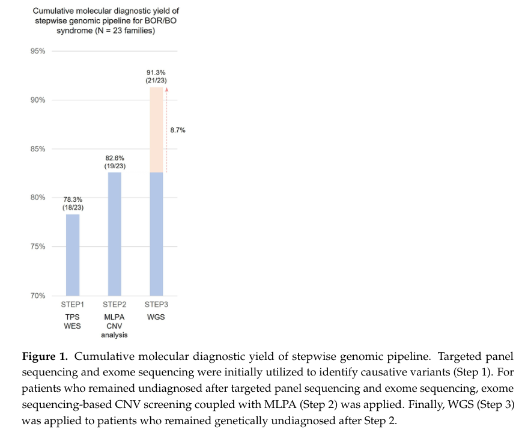

A gene-axis spectrum of second-pharyngeal-arch, otic and renal developmental anomalies caused by heterozygous loss-of-function variants in EYA1, which encodes a transcriptional coactivator and protein tyrosine phosphatase that partners the SIX1 homeodomain transcription factor. Affected individuals have branchial cleft cysts, sinuses or fistulae, preauricular pits, malformations of the outer, middle and inner ear, and conductive, sensorineural or mixed hearing impairment, together with variable congenital anomalies of the kidney and urinary tract (CAKUT). Presence of CAKUT has historically split the condition into two named diseases — branchiootorenal syndrome 1 (BOR1, with renal involvement) and branchiootic syndrome 1 (BOS1, without) — but the same EYA1 haploinsufficiency underlies both, the renal branch is a variably penetrant downstream arm of one developmental lesion rather than a separate mechanism, and both presentations recur within single families. This entry therefore models the EYA1 spectrum as one pathograph with BOS1 and BOR1 as subtypes. See `notes` for the full lump/split rationale.
Ask a research question about EYA1-Related Branchiootorenal Spectrum Disorder. OpenScientist will conduct autonomous deep research using the Disorder Mechanisms Knowledge Base and PubMed literature (typically 10-30 minutes).
Do not include personal health information in your question. Questions and results are cached in your browser's local storage.
Conditions with similar clinical presentations that must be differentiated from EYA1-Related Branchiootorenal Spectrum Disorder:
name: EYA1-Related Branchiootorenal Spectrum Disorder
creation_date: "2026-08-21T00:00:00Z"
description: >-
A gene-axis spectrum of second-pharyngeal-arch, otic and renal developmental
anomalies caused by heterozygous loss-of-function variants in EYA1, which
encodes a transcriptional coactivator and protein tyrosine phosphatase that
partners the SIX1 homeodomain transcription factor. Affected individuals have
branchial cleft cysts, sinuses or fistulae, preauricular pits, malformations
of the outer, middle and inner ear, and conductive, sensorineural or mixed
hearing impairment, together with variable congenital anomalies of the kidney
and urinary tract (CAKUT). Presence of CAKUT has historically split the
condition into two named diseases — branchiootorenal syndrome 1 (BOR1, with
renal involvement) and branchiootic syndrome 1 (BOS1, without) — but the same
EYA1 haploinsufficiency underlies both, the renal branch is a variably
penetrant downstream arm of one developmental lesion rather than a separate
mechanism, and both presentations recur within single families. This entry
therefore models the EYA1 spectrum as one pathograph with BOS1 and BOR1 as
subtypes. See `notes` for the full lump/split rationale.
category: Genetic
synonyms:
- BOR syndrome
- BOS syndrome
- branchio-oto-renal syndrome
- branchio-otic syndrome
- Melnick-Fraser syndrome
- branchiootorenal spectrum disorder
parents:
- Syndromic Hearing Loss
- Congenital Anomaly of the Kidney and Urinary Tract
- Developmental Disorder of the Pharyngeal Apparatus
disease_term:
preferred_term: EYA1-related branchiootorenal spectrum disorder
term:
id: MONDO:0011258
label: branchiootic syndrome 1
references:
- reference: PMID:20301554
title: Branchiootorenal Spectrum Disorder.
tags:
- GeneReviews
mappings:
mondo_mappings:
- term:
id: MONDO:0011258
label: branchiootic syndrome 1
mapping_predicate: skos:narrowMatch
mapping_source: dismech curation
mapping_justification: >-
The renal-sparing presentation of the EYA1 spectrum modeled here. Narrower
than this entry because the entry additionally covers the CAKUT-bearing
presentation coded as MONDO:0007236.
- term:
id: MONDO:0007236
label: branchiootorenal syndrome 1
mapping_predicate: skos:narrowMatch
mapping_source: dismech curation
mapping_justification: >-
The CAKUT-bearing presentation of the EYA1 spectrum modeled here. MONDO
places it under branchio-oto-renal syndrome (MONDO:0007029) while placing
the renal-sparing form under branchiootic syndrome (MONDO:0018878); the
two branches have no common MONDO ancestor more specific than "multiple
congenital anomalies/dysmorphic syndrome without intellectual disability",
so no single MONDO term denotes this entry's scope.
has_subtypes:
- name: BOS1
display_name: Branchiootic Syndrome 1 (renal-sparing)
subtype_term:
preferred_term: branchiootic syndrome 1
term:
id: MONDO:0011258
label: branchiootic syndrome 1
description: >-
The presentation in which branchial, otic and hearing manifestations occur
without detectable congenital anomalies of the kidney and urinary tract.
Defined by the absence of a finding rather than by a distinct lesion, and
not predictable from the EYA1 genotype.
genes:
- preferred_term: EYA1
term:
id: hgnc:3519
label: EYA1
evidence:
- reference: PMID:34868248
reference_title: "Genetic and Phenotypic Variability in Chinese Patients With Branchio-Oto-Renal or Branchio-Oto Syndrome."
supports: SUPPORT
evidence_source: HUMAN_CLINICAL
snippet: >-
In some instances, patients exhibit symptoms similar to those of BOR, with
the exception of renal anomalies; they are diagnosed with branchio-oto
syndrome-1 (BOS1; OMIM#602588) or branchio-oto syndrome-3 (BOS3;
OMIM#608389).
explanation: >-
States that the renal-sparing designation is applied to patients whose
presentation is otherwise identical to BOR, which is the basis for
modelling BOS1 as a presentation of the same entity.
- name: BOR1
display_name: Branchiootorenal Syndrome 1 (with CAKUT)
subtype_term:
preferred_term: branchiootorenal syndrome 1
term:
id: MONDO:0007236
label: branchiootorenal syndrome 1
description: >-
The presentation in which the same EYA1 lesion additionally produces
congenital anomalies of the kidney and urinary tract — kidney agenesis,
hypoplasia or dysplasia, ureteropelvic junction obstruction, calyceal cysts
or diverticula, and vesicoureteral reflux — with a minority progressing to
end-stage kidney disease.
genes:
- preferred_term: EYA1
term:
id: hgnc:3519
label: EYA1
evidence:
- reference: PMID:20301554
reference_title: "Branchiootorenal Spectrum Disorder."
supports: SUPPORT
evidence_source: HUMAN_CLINICAL
snippet: >-
Congenital anomalies of the kidney and urinary tract (CAKUT) include kidney
agenesis, hypoplasia, and dysplasia as well as urinary tract anomalies such
as ureteropelvic junction (UPJ) obstruction, calyceal cysts and/or
diverticula, and/or vesicoureteral reflux (VUR).
explanation: >-
GeneReviews enumerates the CAKUT spectrum that distinguishes this
presentation from the renal-sparing one.
inheritance:
- name: Autosomal dominant
inheritance_term:
preferred_term: Autosomal dominant inheritance
term:
id: HP:0000006
label: Autosomal dominant inheritance
expressivity: VARIABLE
de_novo_rate: Approximately 10%-20% of individuals with a molecular diagnosis
description: >-
Heterozygous EYA1 loss-of-function variants are transmitted in an autosomal
dominant manner, with a 50% recurrence risk for each child of an affected
individual. Expressivity is highly variable between and within families:
which manifestations occur, and how severe they are, cannot be predicted
from the familial EYA1 variant.
evidence:
- reference: PMID:20301554
reference_title: "Branchiootorenal Spectrum Disorder."
supports: SUPPORT
evidence_source: HUMAN_CLINICAL
snippet: >-
BORSD is inherited in an autosomal dominant manner. Of individuals with a
molecular diagnosis of BORSD, approximately 10%-20% have the disorder as
the result of de novo EYA1 or SIX1 pathogenic variant.
explanation: >-
Establishes autosomal dominant transmission and the de novo rate.
- reference: PMID:20301554
reference_title: "Branchiootorenal Spectrum Disorder."
supports: SUPPORT
evidence_source: HUMAN_CLINICAL
snippet: >-
Intrafamilial variability makes it impossible to accurately predict which
manifestations of BORSD may occur and how mild or severe they will be in a
fetus found to have a familial BORSD-related genetic alteration.
explanation: >-
Directly supports the variable-expressivity claim, and is the clinical
basis for treating the renal/non-renal distinction as within-entity
variability rather than as two diseases.
- reference: PMID:21280147
reference_title: "Mutation screening of the EYA1, SIX1, and SIX5 genes in a large cohort of patients harboring branchio-oto-renal syndrome calls into question the pathogenic role of SIX5 mutations."
supports: SUPPORT
evidence_source: HUMAN_CLINICAL
snippet: >-
We did not find correlation between genotype and phenotype, and observed a
high phenotypic variability between and within BOR families.
explanation: >-
A 140-patient cohort finding no genotype-phenotype correlation and high
variability both between and within families. This is the primary-literature
counterpart of the GeneReviews statement above, and is the strongest single
piece of evidence that the BOR/BOS distinction is not a property of the
EYA1 genotype.
prevalence:
- population: Western countries
measure_type: POINT_PREVALENCE
prevalence_class: BAND_1_9_PER_100000
rate_per_100000: 2.5
notes: >-
Reported as 1/40,000, which normalizes to 2.5 per 100,000. CAVEAT: this is an
old estimate that is chain-cited through review after review rather than
re-measured, and it describes the whole clinical BOR/BOS spectrum rather than
the EYA1 subset. Treat the `prevalence_class` band as the reliable part and
the point figure as indicative only.
evidence:
- reference: PMID:24730701
reference_title: "Branchio-oto-renal syndrome: comprehensive review based on nationwide surveillance in Japan."
supports: SUPPORT
evidence_source: HUMAN_CLINICAL
snippet: >-
The prevalence of BOR syndrome is 1/40,000 in Western countries
explanation: >-
Attributes the 1/40,000 figure specifically to Western countries, which is
the appropriate scoping for this record.
- population: Japan
measure_type: CASES_IN_LITERATURE
prevalence_class: UNKNOWN
notes: >-
Nationwide surveillance in 2009-2010 identified approximately 250 patients in
Japan. Recorded as an ascertained case count rather than converted to a rate,
because a surveillance case count is a floor on occurrence and not a
population-denominator measurement.
evidence:
- reference: PMID:24730701
reference_title: "Branchio-oto-renal syndrome: comprehensive review based on nationwide surveillance in Japan."
supports: SUPPORT
evidence_source: HUMAN_CLINICAL
snippet: >-
nationwide surveillance in 2009-2010 identified approximately 250 BOR
patients in Japan
explanation: >-
A directly measured national ascertainment, offered as a check on the
chain-cited 1/40,000 estimate.
- population: Profoundly deaf children
measure_type: POINT_PREVALENCE
prevalence_class: ABOVE_1_IN_1000
rate_per_100000: 2000.0
notes: >-
Reported as affecting 2% of profoundly deaf children, i.e. 2,000 per 100,000
within that ascertained population — not a general-population rate.
evidence:
- reference: PMID:34868248
reference_title: "Genetic and Phenotypic Variability in Chinese Patients With Branchio-Oto-Renal or Branchio-Oto Syndrome."
supports: SUPPORT
evidence_source: HUMAN_CLINICAL
snippet: >-
it affects 2% of profoundly deaf children
explanation: >-
Source of the enriched prevalence within a deaf paediatric population.
pathophysiology:
- name: EYA1 Loss-of-Function Variant
biological_scale: MOLECULAR
role: trigger
description: >-
A heterozygous pathogenic EYA1 variant — nonsense, frameshift, splice-site,
missense, or a whole- or partial-gene deletion arising from complex genomic
rearrangement. Missense variants cluster in the highly conserved C-terminal
271-amino-acid Eya homologous region (eyaHR), the domain that mediates SIX1
binding and carries the phosphatase activity, which is why coding-sequence
analysis alone misses a substantial minority of cases.
genetic_context:
gene:
preferred_term: EYA1
term:
id: hgnc:3519
label: EYA1
variant_origin: GERMLINE
zygosity: HETEROZYGOUS
functional_impact_category: LOSS_OF_FUNCTION
description: >-
Heterozygous germline loss-of-function alleles. Point mutations and
copy-number losses both occur, and both act by reducing functional EYA1
dosage rather than by producing a toxic product.
evidence:
- reference: PMID:9020840
reference_title: "A human homologue of the Drosophila eyes absent gene underlies branchio-oto-renal (BOR) syndrome and identifies a novel gene family."
supports: SUPPORT
evidence_source: HUMAN_CLINICAL
snippet: >-
A candidate gene for Branchio-Oto-Renal (BOR) syndrome was identified at
chromosome 8q13.3 by positional cloning and shown to underlie the disease.
explanation: >-
Establishes EYA1 as the causal gene identified by positional cloning.
- reference: PMID:9361030
reference_title: "Clustering of mutations responsible for branchio-oto-renal (BOR) syndrome in the eyes absent homologous region (eyaHR) of EYA1."
supports: SUPPORT
evidence_source: HUMAN_CLINICAL
snippet: >-
To date, 14 mutations have been detected in BOR patients, all of which are
different. However, all the mutations are located within or in the
immediate vicinity of the eyaHR
explanation: >-
Supports clustering of pathogenic variants in the conserved eyaHR domain.
- reference: PMID:15146463
reference_title: "Branchio-oto-renal syndrome: the mutation spectrum in EYA1 and its phenotypic consequences."
supports: SUPPORT
evidence_source: HUMAN_CLINICAL
snippet: >-
Of these mutations, 80% were coding sequence variants identified by SSCP,
and 20% were complex genomic rearrangements identified by a semiquantitative
PCR-based screen.
explanation: >-
Supports the allelic spectrum including complex rearrangements invisible to
coding-sequence analysis.
downstream:
- target: EYA1 Haploinsufficiency
causal_link_type: DIRECT
description: >-
A single functional EYA1 allele yields subthreshold EYA1 protein in the
developing pharyngeal arch, otic placode and metanephric mesenchyme.
- name: EYA1 Haploinsufficiency
biological_scale: MOLECULAR
role: central_effector
description: >-
Reduction of functional EYA1 protein below the dosage threshold required for
normal development. Dosage sensitivity is the operative mechanism: an allelic
series in mouse showed that roughly 20% of normal Eya1 protein suffices to
establish the metanephric blastema and induce ureteric bud formation, but not
to support its normal branching — so different EYA1-dependent developmental
steps have different dosage thresholds. This graded-threshold behaviour is a
mechanistically plausible substrate for the variable expressivity seen
clinically, though it has not been shown to be its cause in humans.
genes:
- preferred_term: EYA1
term:
id: hgnc:3519
label: EYA1
evidence:
- reference: PMID:15141091
reference_title: "SIX1 mutations cause branchio-oto-renal syndrome by disruption of EYA1-SIX1-DNA complexes."
supports: SUPPORT
evidence_source: HUMAN_CLINICAL
snippet: >-
Haploinsufficiency for the human gene EYA1, a homologue of the Drosophila
gene eyes absent (eya), causes BOR and BO syndromes.
explanation: >-
States that one and the same molecular lesion — EYA1 haploinsufficiency —
causes both the renal-involved and renal-sparing presentations. This is the
central evidential basis for modelling them as one entity.
- reference: PMID:16018995
reference_title: "Eya 1 acts as a critical regulator for specifying the metanephric mesenchyme."
supports: SUPPORT
evidence_source: MODEL_ORGANISM
snippet: >-
we now demonstrated that approximately 20% of normal Eya 1 protein level is
sufficient for establishing the metanephric blastema and inducing the
ureteric bud formation but not for its normal branching
explanation: >-
Quantifies the dosage sensitivity of EYA1-dependent kidney development and
shows that distinct developmental steps have distinct thresholds.
- reference: PMID:38766525
reference_title: "CRISPR-based editing strategies to rectify EYA1 complex genomic rearrangement linked to haploinsufficiency."
supports: SUPPORT
evidence_source: IN_VITRO
snippet: >-
This suggests that CRISPRa-based gene therapies could offer substantial
translational potential for approximately 70% of disease-causing EYA1
variants responsible for haploinsufficiency.
explanation: >-
Quantifies the share of disease-causing EYA1 variants that act through
haploinsufficiency, supporting haploinsufficiency as the dominant mechanism
at this node rather than one of several equally weighted routes.
downstream:
- target: Failure of EYA1-SIX1 Transcriptional Coactivation
causal_link_type: DIRECT
description: >-
EYA1 has no intrinsic DNA-binding activity, so reduced EYA1 acts by
limiting the coactivator supply to SIX1-bound target promoters.
- name: Failure of EYA1-SIX1 Transcriptional Coactivation
biological_scale: MOLECULAR
role: central_effector
description: >-
EYA1 is a transcriptional coactivator that cannot bind DNA itself; it is
recruited to target promoters by the SIX1 homeodomain transcription factor.
EYA proteins additionally carry an intrinsic protein tyrosine phosphatase
activity, and it is that enzymatic activity which switches the SIX1-DACH
complex from repression to activation. Reduced EYA1 dosage therefore
withdraws activation from the SIX1-dependent gene programme that controls
precursor cell proliferation and survival across several organ primordia,
which is why one gene defect produces a multi-organ malformation bundle.
molecular_functions:
- preferred_term: EYA1 transcriptional coactivator function
term:
id: GO:0003713
label: transcription coactivator activity
modifier: DECREASED
- preferred_term: EYA1 protein tyrosine phosphatase activity
term:
id: GO:0004725
label: protein tyrosine phosphatase activity
modifier: DECREASED
evidence:
- reference: PMID:14628042
reference_title: "Eya protein phosphatase activity regulates Six1-Dach-Eya transcriptional effects in mammalian organogenesis."
supports: SUPPORT
evidence_source: MODEL_ORGANISM
snippet: >-
The phosphatase function of Eya switches the function of Six1-Dach from
repression to activation, causing transcriptional activation through
recruitment of co-activators.
explanation: >-
Establishes the phosphatase-dependent repression-to-activation switch that
is the molecular function lost in haploinsufficiency.
- reference: PMID:14628042
reference_title: "Eya protein phosphatase activity regulates Six1-Dach-Eya transcriptional effects in mammalian organogenesis."
supports: SUPPORT
evidence_source: MODEL_ORGANISM
snippet: >-
Here, we report that Six1 is required for the development of murine kidney,
muscle and inner ear, and that it exhibits synergistic genetic interactions
with Eya factors.
explanation: >-
Supports the shared EYA-SIX requirement across the kidney and inner ear,
the two organ systems that define this spectrum.
- reference: PMID:15141091
reference_title: "SIX1 mutations cause branchio-oto-renal syndrome by disruption of EYA1-SIX1-DNA complexes."
supports: SUPPORT
evidence_source: IN_VITRO
snippet: >-
We demonstrate that all three mutations are crucial for Eya1-Six1
interaction, and the two mutations within the homeodomain region are
essential for specific Six1-DNA binding.
explanation: >-
Shows that disrupting the EYA1-SIX1 complex is itself sufficient to cause
the same clinical spectrum, confirming the complex — not EYA1 alone — is the
functional unit.
- reference: PMID:15496442
reference_title: "Eya1 and Six1 are essential for early steps of sensory neurogenesis in mammalian cranial placodes."
supports: SUPPORT
evidence_source: MODEL_ORGANISM
snippet: >-
Eya1 encodes a transcriptional co-activator and is expressed in cranial
sensory placodes. It interacts with and functions upstream of the homeobox
gene Six1 during otic placodal development.
explanation: >-
States the coactivator role and the epistatic ordering of EYA1 above SIX1
in the placodal programme, which is the directionality this node asserts.
- reference: PMID:16797546
reference_title: "Branchio-oto-renal syndrome associated mutations in Eyes Absent 1 result in loss of phosphatase activity."
supports: SUPPORT
evidence_source: IN_VITRO
snippet: >-
Here we report that BOR-associated mutations lead to a loss of phosphatase
activity in Eya1 proteins, while mutations associated with ocular defects
yield Eya1 proteins with near normal levels of phosphatase activity.
explanation: >-
Demonstrates loss of phosphatase activity for the actual human
BOR-associated EYA1 mutations, rather than inferring it from generic Eya
biology. The contrast with ocular-defect alleles, which retain phosphatase
activity, shows the phosphatase loss is specific to this disease mechanism
rather than a general consequence of any EYA1 mutation.
notes: >-
ALLELIC DISTINCTION WORTH PRESERVING. EYA1 mutations causing ocular defects
(anterior segment anomalies with or without cataract) retain near-normal
phosphatase activity, whereas the BOR/BOS-associated mutations lose it
(PMID:16797546). The two EYA1 phenotypes are therefore mechanistically
distinct at this node, not a severity continuum. This matters practically:
the ocular disease name is an easily confused EYA1 label, and a literature
search keyed on it will return eye-disease papers that have nothing to do
with this entry.
downstream:
- target: Second Pharyngeal Arch Dysmorphogenesis
causal_link_type: DIRECT
description: >-
Withdrawal of EYA1-SIX1 activation from the pharyngeal apparatus programme.
- target: Otic Placode and Inner Ear Developmental Arrest
causal_link_type: DIRECT
description: >-
Withdrawal of EYA1-SIX1 activation from the otic placode programme.
- target: Metanephric Mesenchyme Specification Failure
causal_link_type: DIRECT
description: >-
Withdrawal of EYA1-SIX1 activation from the metanephric programme. This
edge is variably penetrant in humans — roughly 38% of affected individuals
have renal anomalies — and it is the presence or absence of this branch
that historically split the spectrum into BOR1 and BOS1.
- name: Second Pharyngeal Arch Dysmorphogenesis
biological_scale: TISSUE
description: >-
Failure of normal development and obliteration of the second pharyngeal
(branchial) cleft and pouch, leaving epithelium-lined remnants that present
as lateral cervical fistulae, sinuses or cysts, and disturbed development of
the arch-derived external ear, producing preauricular pits and tags. The
second-arch defect dominates and gives the disorder its name, but the
EYA1-dependent programme is not confined to that arch: the auricle forms from
first- and second-arch hillocks and the external auditory canal from the
first pharyngeal cleft, so external-ear canal anomalies belong to this node
even though they are not strictly second-arch derivatives. The node is named
for the predominant lesion rather than the full anatomical extent.
biological_processes:
- preferred_term: pharyngeal system development
term:
id: GO:0060037
label: pharyngeal system development
modifier: ABNORMAL
locations:
- preferred_term: second pharyngeal arch
term:
id: UBERON:0003066
label: pharyngeal arch 2
evidence:
- reference: PMID:20301554
reference_title: "Branchiootorenal Spectrum Disorder."
supports: SUPPORT
evidence_source: HUMAN_CLINICAL
snippet: >-
Branchiootorenal spectrum disorder (BORSD) is characterized by second
branchial arch anomalies (e.g., preauricular pits and branchial cleft
sinuses or cysts)
explanation: >-
Localizes the branchial phenotype to second-arch derivatives.
downstream:
- target: Branchial Fistula or Cyst
causal_link_type: DIRECT
description: >-
Unobliterated second branchial cleft and pouch persist as epithelium-lined
lateral cervical fistulae, sinuses or cysts.
- target: Preauricular Pit
causal_link_type: DIRECT
description: >-
Disturbed fusion of the arch-derived auricular hillocks leaves a
preauricular pit.
- target: Preauricular Skin Tag
causal_link_type: DIRECT
description: >-
Supernumerary arch-derived tissue persists as a preauricular tag.
- target: Stenosis of the External Auditory Canal
causal_link_type: DIRECT
description: >-
Disturbed EYA1-dependent development of the pharyngeal apparatus narrows or
obliterates the external auditory canal. The canal is a first-cleft
derivative rather than a second-arch one, but its canalization depends on
surrounding arch mesenchyme affected by the same lesion — see this node's
description for why first-cleft derivatives are grouped here.
- name: Otic Placode and Inner Ear Developmental Arrest
biological_scale: TISSUE
description: >-
EYA1 is expressed from the emergence of the otic placode and is required for
development of all components of the inner ear. In the mouse null, inner ear
development arrests at the otic vesicle stage and all inner ear components
and specific cranial sensory ganglia fail to form; heterozygotes show
conductive hearing loss resembling the human disorder. In humans the
corresponding lesion is a graded malformation — cochlear hypoplasia,
dysplastic semicircular canals, dilated internal auditory canal, enlarged
vestibular aqueduct, and a deformed ossicular chain — rather than a complete
developmental arrest.
biological_processes:
- preferred_term: otic placode development
term:
id: GO:1905040
label: otic placode development
modifier: ABNORMAL
- preferred_term: inner ear morphogenesis
term:
id: GO:0042472
label: inner ear morphogenesis
modifier: ABNORMAL
locations:
- preferred_term: otic placode
term:
id: UBERON:0003069
label: otic placode
evidence:
- reference: PMID:9020840
reference_title: "A human homologue of the Drosophila eyes absent gene underlies branchio-oto-renal (BOR) syndrome and identifies a novel gene family."
supports: SUPPORT
evidence_source: MODEL_ORGANISM
snippet: >-
The expression pattern of the murine EYA1 orthologue, Eya1, suggests a role
in the development of all components of the inner ear, from the emergence
of the otic placode.
explanation: >-
Establishes EYA1 expression from otic placode emergence onward.
- reference: PMID:10471511
reference_title: "Eya1-deficient mice lack ears and kidneys and show abnormal apoptosis of organ primordia."
supports: SUPPORT
evidence_source: MODEL_ORGANISM
snippet: >-
Inner ear development in Eya1 homozygotes arrests at the otic vesicle stage
and all components of the inner ear and specific cranial sensory ganglia
fail to form.
explanation: >-
Demonstrates the developmental step at which the inner ear programme fails
when Eya1 is absent.
- reference: PMID:34868248
reference_title: "Genetic and Phenotypic Variability in Chinese Patients With Branchio-Oto-Renal or Branchio-Oto Syndrome."
supports: SUPPORT
evidence_source: HUMAN_CLINICAL
snippet: >-
All seven patients exhibited various abnormal configurations of the middle
and/or inner ear, such as deformed ossicular chain, hypoplastic cochlea,
dysplastic semicircular canals, dilated internal auditory canals, or
enlarged vestibular aqueduct.
explanation: >-
Documents the human imaging correlate of the otic developmental lesion.
downstream:
- target: Hearing Impairment
causal_link_type: DIRECT
description: >-
The otic and middle-ear developmental lesion is the cause of hearing
impairment of every type in this disorder, which is why hearing loss is
near-universal here. The conductive, sensorineural and mixed subtypes below
partition this outcome according to which part of the apparatus is worst
affected in a given individual.
- target: Mixed Hearing Impairment
causal_link_type: DIRECT
description: >-
The most common single outcome, combining outer/middle-ear conductive and
inner-ear sensorineural components arising from the same developmental
lesion.
- target: Conductive Hearing Impairment
causal_link_type: DIRECT
description: >-
Where ossicular and external/middle-ear malformation predominates and
cochlear function is preserved.
- target: Sensorineural Hearing Impairment
causal_link_type: DIRECT
description: >-
Where cochlear malformation predominates.
- name: Metanephric Mesenchyme Specification Failure
biological_scale: TISSUE
description: >-
EYA1 specifies the metanephric blastema within the intermediate mesoderm and
functions at the top of the genetic hierarchy controlling kidney
organogenesis, acting with SIX1 and PAX2 to drive Gdnf expression. Gdnf
directs ureteric bud outgrowth via c-Ret; in the Eya1 null it is not
detected in metanephric mesenchyme and the ureteric bud never forms. In
humans the partial (heterozygous) equivalent produces the CAKUT spectrum
rather than bilateral agenesis. This branch is variably penetrant, and its
presence or absence is what the BOR1/BOS1 clinical labels record.
biological_processes:
- preferred_term: metanephros development
term:
id: GO:0001656
label: metanephros development
modifier: ABNORMAL
- preferred_term: ureteric bud development
term:
id: GO:0001657
label: ureteric bud development
modifier: DECREASED
locations:
- preferred_term: metanephric mesenchyme
term:
id: UBERON:0003220
label: metanephric mesenchyme
cell_types:
- preferred_term: metanephric mesenchyme stem cell
term:
id: CL:0000324
label: metanephric mesenchyme stem cell
evidence:
- reference: PMID:10471511
reference_title: "Eya1-deficient mice lack ears and kidneys and show abnormal apoptosis of organ primordia."
supports: SUPPORT
evidence_source: MODEL_ORGANISM
snippet: >-
Gdnf expression, which is required to direct ureteric bud outgrowth via
activation of the c-ret Rtk (refs 5, 6, 7, 8), is not detected in Eya1-/-
metanephric mesenchyme.
explanation: >-
Places EYA1 upstream of Gdnf in the ureteric-induction cascade.
- reference: PMID:16018995
reference_title: "Eya 1 acts as a critical regulator for specifying the metanephric mesenchyme."
supports: SUPPORT
evidence_source: MODEL_ORGANISM
snippet: >-
we show that Eya 1 probably functions at the top of the genetic hierarchy
controlling kidney organogenesis and it acts in combination with Six 1 and
Pax 2 to regulate Gdnf expression during UB outgrowth and branching
explanation: >-
Establishes the EYA1-SIX1-PAX2 to Gdnf regulatory relationship in kidney
development.
- reference: PMID:10471511
reference_title: "Eya1-deficient mice lack ears and kidneys and show abnormal apoptosis of organ primordia."
supports: SUPPORT
evidence_source: MODEL_ORGANISM
snippet: >-
Eya1 heterozygotes show renal abnormalities and a conductive hearing loss
similar to BOR syndrome
explanation: >-
Shows the heterozygous mouse recapitulates the human dosage-sensitive
phenotype, supporting haploinsufficiency as the human mechanism.
downstream:
- target: Congenital Anomaly of the Kidney and Urinary Tract
causal_link_type: DIRECT
description: >-
Defective metanephric specification and ureteric induction manifest as
kidney agenesis, hypoplasia or dysplasia and urinary tract anomalies.
phenotypes:
- category: Auditory
name: Hearing Impairment
frequency: VERY_FREQUENT
description: >-
Hearing impairment of any type is the most consistent feature of the
spectrum, present in nearly every affected individual, and is the phenotype
that most often brings a family to attention. Severity ranges from mild to
profound. The conductive, sensorineural and mixed subtypes below partition
this total.
phenotype_term:
preferred_term: Hearing impairment
term:
id: HP:0000365
label: Hearing impairment
evidence:
- reference: PMID:34868248
reference_title: "Genetic and Phenotypic Variability in Chinese Patients With Branchio-Oto-Renal or Branchio-Oto Syndrome."
supports: SUPPORT
evidence_source: HUMAN_CLINICAL
snippet: >-
Hearing impairment is the most common clinical feature, present in 98.5% of
affected individuals
explanation: >-
Quantifies hearing impairment of any type at 98.5%, supporting the
VERY_FREQUENT band (80-100%) for this parent phenotype.
- category: Auditory
name: Mixed Hearing Impairment
frequency: FREQUENT
description: >-
The predominant single subtype, affecting roughly half of those with hearing
loss, and reflecting the combination of middle-ear ossicular and inner-ear
malformation produced by the same developmental lesion.
phenotype_term:
preferred_term: Mixed hearing impairment
term:
id: HP:0000410
label: Mixed hearing impairment
evidence:
- reference: PMID:34868248
reference_title: "Genetic and Phenotypic Variability in Chinese Patients With Branchio-Oto-Renal or Branchio-Oto Syndrome."
supports: SUPPORT
evidence_source: HUMAN_CLINICAL
snippet: >-
The forms of hearing loss can be mixed (50%), conductive (30%), or
sensorineural (20%), ranging in severity from mild to profound
explanation: >-
Quantifies mixed hearing loss specifically at 50%, supporting the FREQUENT
band (30-79%) for this subtype. The higher all-type figure of 98.5% belongs
to the parent `Hearing Impairment` phenotype and does not support a
VERY_FREQUENT band here.
- category: Auditory
name: Conductive Hearing Impairment
description: >-
The conductive component, attributable to ossicular chain malformation,
external auditory canal stenosis and middle ear dysplasia.
phenotype_term:
preferred_term: Conductive hearing impairment
term:
id: HP:0000405
label: Conductive hearing impairment
evidence:
- reference: PMID:20301554
reference_title: "Branchiootorenal Spectrum Disorder."
supports: SUPPORT
evidence_source: HUMAN_CLINICAL
snippet: >-
malformations of the outer, middle, and inner ear associated with
conductive, sensorineural, and/or mixed hearing impairment
explanation: >-
GeneReviews documents the conductive component within the hearing-loss
spectrum.
- category: Auditory
name: Sensorineural Hearing Impairment
description: >-
The sensorineural component, attributable to cochlear malformation arising
from the arrested otic developmental programme.
phenotype_term:
preferred_term: Sensorineural hearing impairment
term:
id: HP:0000407
label: Sensorineural hearing impairment
evidence:
- reference: PMID:20301554
reference_title: "Branchiootorenal Spectrum Disorder."
supports: SUPPORT
evidence_source: HUMAN_CLINICAL
snippet: >-
malformations of the outer, middle, and inner ear associated with
conductive, sensorineural, and/or mixed hearing impairment
explanation: >-
GeneReviews documents the sensorineural component within the hearing-loss
spectrum.
- category: Craniofacial
name: Preauricular Pit
frequency: VERY_FREQUENT
description: >-
A small depression anterior to the ascending limb of the helix. Together
with preauricular tags this is among the most frequent findings and is a
major diagnostic criterion.
phenotype_term:
preferred_term: Preauricular pit
term:
id: HP:0004467
label: Preauricular pit
evidence:
- reference: PMID:34868248
reference_title: "Genetic and Phenotypic Variability in Chinese Patients With Branchio-Oto-Renal or Branchio-Oto Syndrome."
supports: SUPPORT
evidence_source: HUMAN_CLINICAL
snippet: >-
other common features include preauricular pits or tags (83.6%)
explanation: >-
Quantifies preauricular pits or tags at 83.6%, supporting the
VERY_FREQUENT band (80-100%).
- category: Craniofacial
name: Preauricular Skin Tag
description: >-
A skin appendage anterior to the ear, reported together with preauricular
pits as a second-arch external ear finding.
phenotype_term:
preferred_term: Preauricular skin tag
term:
id: HP:0000384
label: Preauricular skin tag
evidence:
- reference: PMID:34868248
reference_title: "Genetic and Phenotypic Variability in Chinese Patients With Branchio-Oto-Renal or Branchio-Oto Syndrome."
supports: SUPPORT
evidence_source: HUMAN_CLINICAL
snippet: >-
proband 4-II-2 had mild bilateral microtia and left preauricular tags
explanation: >-
Documents preauricular tags in an affected proband in this cohort.
- category: Craniofacial
name: Branchial Fistula or Cyst
frequency: FREQUENT
description: >-
Epithelium-lined lateral cervical fistulae, sinuses or cysts representing
unobliterated second branchial cleft remnants. They may become infected or
symptomatic and are then excised.
phenotype_term:
preferred_term: Branchial fistula
term:
id: HP:0009795
label: Branchial fistula
evidence:
- reference: PMID:34868248
reference_title: "Genetic and Phenotypic Variability in Chinese Patients With Branchio-Oto-Renal or Branchio-Oto Syndrome."
supports: SUPPORT
evidence_source: HUMAN_CLINICAL
snippet: >-
branchial fistulae or cysts (68.5%)
explanation: >-
Quantifies branchial fistulae or cysts at 68.5%, supporting the FREQUENT
band (30-79%).
- category: Auditory
name: Stenosis of the External Auditory Canal
frequency: FREQUENT
description: >-
Narrowing or atresia of the external auditory canal, contributing to the
conductive component of hearing loss and sometimes corrected by canaloplasty.
phenotype_term:
preferred_term: Stenosis of the external auditory canal
term:
id: HP:0000402
label: Stenosis of the external auditory canal
evidence:
- reference: PMID:34868248
reference_title: "Genetic and Phenotypic Variability in Chinese Patients With Branchio-Oto-Renal or Branchio-Oto Syndrome."
supports: SUPPORT
evidence_source: HUMAN_CLINICAL
snippet: >-
external auditory canal stenosis (31.5%)
explanation: >-
Quantifies external auditory canal stenosis at 31.5%, supporting the
FREQUENT band (30-79%).
- category: Auditory
name: Cochlear Malformation
description: >-
Hypoplastic cochlea and related inner-ear dysplasia demonstrable on
thin-section temporal bone CT.
phenotype_term:
preferred_term: Cochlear malformation
term:
id: HP:0008554
label: Cochlear malformation
evidence:
- reference: PMID:34868248
reference_title: "Genetic and Phenotypic Variability in Chinese Patients With Branchio-Oto-Renal or Branchio-Oto Syndrome."
supports: SUPPORT
evidence_source: HUMAN_CLINICAL
snippet: >-
such as deformed ossicular chain, hypoplastic cochlea, dysplastic
semicircular canals, dilated internal auditory canals, or enlarged
vestibular aqueduct
explanation: >-
Documents hypoplastic cochlea among the imaging findings in this cohort.
- category: Auditory
name: Abnormal Semicircular Canal Morphology
description: >-
Dysplastic semicircular canals, part of the inner-ear malformation bundle
seen on temporal bone imaging.
phenotype_term:
preferred_term: Abnormal semicircular canal morphology
term:
id: HP:0011380
label: Abnormal semicircular canal morphology
evidence:
- reference: PMID:34868248
reference_title: "Genetic and Phenotypic Variability in Chinese Patients With Branchio-Oto-Renal or Branchio-Oto Syndrome."
supports: SUPPORT
evidence_source: HUMAN_CLINICAL
snippet: >-
such as deformed ossicular chain, hypoplastic cochlea, dysplastic
semicircular canals, dilated internal auditory canals, or enlarged
vestibular aqueduct
explanation: >-
Documents dysplastic semicircular canals among the imaging findings.
- category: Auditory
name: Abnormality of the Middle Ear Ossicles
description: >-
Deformed ossicular chain, the principal anatomical basis of the conductive
hearing loss and the reason middle-ear reconstructive surgery frequently
fails to restore hearing.
phenotype_term:
preferred_term: Abnormality of the middle ear ossicles
term:
id: HP:0004452
label: Abnormality of the middle ear ossicles
evidence:
- reference: PMID:34868248
reference_title: "Genetic and Phenotypic Variability in Chinese Patients With Branchio-Oto-Renal or Branchio-Oto Syndrome."
supports: SUPPORT
evidence_source: HUMAN_CLINICAL
snippet: >-
such as deformed ossicular chain, hypoplastic cochlea, dysplastic
semicircular canals, dilated internal auditory canals, or enlarged
vestibular aqueduct
explanation: >-
Documents deformed ossicular chain among the imaging findings.
- category: Renal
name: Congenital Anomaly of the Kidney and Urinary Tract
subtype: BOR1
frequency: FREQUENT
description: >-
Kidney agenesis, hypoplasia or dysplasia together with urinary tract
anomalies including ureteropelvic junction obstruction, calyceal cysts or
diverticula and vesicoureteral reflux. Reported in roughly 38% of affected
individuals; its presence is what defines the BOR1 rather than BOS1 label.
notes: >-
FREQUENCY CAVEAT. The 38.2% figure derives from clinically ascertained
BOR/BOS cohorts that mix EYA1, SIX1 and molecularly unsolved cases, so it is
a spectrum-level frequency and not an EYA1-specific penetrance estimate.
Published renal-anomaly frequencies vary widely across series, and detection
depends on whether renal imaging was performed at all — an ascertainment
problem recorded as an open question in the
`gap_eya1_renal_branch_penetrance` discussion. Treat the FREQUENT band as a
coarse indication rather than a measured EYA1 penetrance.
phenotype_term:
preferred_term: Renal hypoplasia
term:
id: HP:0000089
label: Renal hypoplasia
evidence:
- reference: PMID:34868248
reference_title: "Genetic and Phenotypic Variability in Chinese Patients With Branchio-Oto-Renal or Branchio-Oto Syndrome."
supports: SUPPORT
evidence_source: HUMAN_CLINICAL
snippet: >-
Hearing impairment is the most common clinical feature, present in 98.5% of
affected individuals; other common features include preauricular pits or
tags (83.6%), branchial fistulae or cysts (68.5%), renal anomalies (38.2%)
explanation: >-
Quantifies renal anomalies at 38.2%, supporting the FREQUENT band (30-79%)
and the variable penetrance of the renal branch.
- reference: PMID:20301554
reference_title: "Branchiootorenal Spectrum Disorder."
supports: SUPPORT
evidence_source: HUMAN_CLINICAL
snippet: >-
Congenital anomalies of the kidney and urinary tract (CAKUT) include kidney
agenesis, hypoplasia, and dysplasia
explanation: >-
GeneReviews enumerates the renal malformation spectrum.
- category: Renal
name: Renal Agenesis
subtype: BOR1
description: >-
Complete absence of one or both kidneys, the most severe end of the CAKUT
spectrum in this disorder.
phenotype_term:
preferred_term: Renal agenesis
term:
id: HP:0000104
label: Renal agenesis
evidence:
- reference: PMID:20301554
reference_title: "Branchiootorenal Spectrum Disorder."
supports: SUPPORT
evidence_source: HUMAN_CLINICAL
snippet: >-
Congenital anomalies of the kidney and urinary tract (CAKUT) include kidney
agenesis, hypoplasia, and dysplasia
explanation: >-
GeneReviews lists kidney agenesis within the CAKUT spectrum.
- category: Renal
name: Vesicoureteral Reflux
subtype: BOR1
description: >-
Retrograde flow of urine from bladder to ureter, managed with prophylactic
antibiotics and/or surgical correction.
phenotype_term:
preferred_term: Vesicoureteral reflux
term:
id: HP:0000076
label: Vesicoureteral reflux
evidence:
- reference: PMID:20301554
reference_title: "Branchiootorenal Spectrum Disorder."
supports: SUPPORT
evidence_source: HUMAN_CLINICAL
snippet: >-
urinary tract anomalies such as ureteropelvic junction (UPJ) obstruction,
calyceal cysts and/or diverticula, and/or vesicoureteral reflux (VUR)
explanation: >-
GeneReviews lists vesicoureteral reflux among the urinary tract anomalies.
- category: Renal
name: Ureteropelvic Junction Obstruction
subtype: BOR1
description: >-
Obstruction at the pelviureteric junction causing hydronephrosis; corrected
surgically by pyeloplasty.
phenotype_term:
preferred_term: Ureteropelvic junction obstruction
term:
id: HP:0000074
label: Ureteropelvic junction obstruction
evidence:
- reference: PMID:20301554
reference_title: "Branchiootorenal Spectrum Disorder."
supports: SUPPORT
evidence_source: HUMAN_CLINICAL
snippet: >-
urinary tract anomalies such as ureteropelvic junction (UPJ) obstruction,
calyceal cysts and/or diverticula, and/or vesicoureteral reflux (VUR)
explanation: >-
GeneReviews lists UPJ obstruction among the urinary tract anomalies.
- category: Renal
name: Stage 5 Chronic Kidney Disease
subtype: BOR1
description: >-
Progression to end-stage kidney disease occurs in a minority and depends on
the severity of the underlying kidney involvement; it may require dialysis or
transplantation.
phenotype_term:
preferred_term: Stage 5 chronic kidney disease
term:
id: HP:0003774
label: Stage 5 chronic kidney disease
evidence:
- reference: PMID:20301554
reference_title: "Branchiootorenal Spectrum Disorder."
supports: SUPPORT
evidence_source: HUMAN_CLINICAL
snippet: >-
Some individuals progress to end-stage kidney disease (ESKD) depending on
the severity of the kidney involvement.
explanation: >-
GeneReviews documents progression to ESKD in a subset, and conditions it on
severity of kidney involvement.
genetic:
- name: EYA1
gene_term:
preferred_term: EYA1
term:
id: hgnc:3519
label: EYA1
relationship_type: CAUSATIVE
variant_origin: GERMLINE
frequency: >-
the major cause of the spectrum; reported yields range from ~40% of
clinically ascertained probands in the coding-sequence era to 66.7% in a
structural-variant-aware genotyped cohort
notes: >-
EYA1 at 8q13.3 is the major cause of the spectrum. Pathogenic variants
include nonsense, frameshift, splice-site and missense changes as well as
complex genomic rearrangements and whole-gene deletions; the latter require a
dosage-sensitive assay and are missed by coding-sequence analysis alone.
case_fractions:
- population: Individuals meeting Chang et al. clinical criteria for BOR
case_fraction_percent: 40.0
notes: >-
Diagnostic yield of EYA1 testing among clinically ascertained probands, not
a share of all spectrum cases.
evidence:
- reference: PMID:15146463
reference_title: "Branchio-oto-renal syndrome: the mutation spectrum in EYA1 and its phenotypic consequences."
supports: SUPPORT
evidence_source: HUMAN_CLINICAL
snippet: >-
We found that in approximately 40% of persons meeting our criteria, EYA1
mutations were identified.
explanation: >-
Quantifies the EYA1 diagnostic yield in clinically defined BOR.
- population: Japanese BOR/BOS cohort, 78 genotyped probands from 129 families
case_fraction_percent: 66.7
cohort_size: 78
notes: >-
Among 169 patients from 129 families, 78 probands underwent genetic
testing; EYA1 accounted for two thirds of those (52/78) and SIX1 for a
further 17.9%. Higher than the older 40% coding-sequence-era yield,
consistent with improved detection of structural variants. The denominator
is the genotyped proband count, not the 169-patient total — multiplying the
percentage by the full cohort would overstate EYA1-positive individuals by
more than twofold.
evidence:
- reference: PMID:41842599
reference_title: "Hearing characteristics of Branchio-oto-renal syndrome in Japan."
supports: SUPPORT
evidence_source: HUMAN_CLINICAL
snippet: >-
with 52 probands (66.7%) carrying EYA1 variants.
explanation: >-
Gives the numerator and percentage directly, establishing that the
fraction is over the 78 genotyped probands within a 169-patient Japanese
cohort.
evidence:
- reference: PMID:9020840
reference_title: "A human homologue of the Drosophila eyes absent gene underlies branchio-oto-renal (BOR) syndrome and identifies a novel gene family."
supports: SUPPORT
evidence_source: HUMAN_CLINICAL
snippet: >-
This gene is a human homologue of the Drosophila eyes absent gene (eya), and
was therefore called EYA1.
explanation: >-
Identifies EYA1 and its Drosophila orthologue.
- name: SIX1
gene_term:
preferred_term: SIX1
term:
id: hgnc:10887
label: SIX1
relationship_type: COOPERATING
variant_origin: GERMLINE
notes: >-
SIX1 is recorded as pathway context, not as a causal gene for this entry. It
is the obligate DNA-binding partner through which EYA1 acts, so the
EYA1-SIX1 complex rather than EYA1 alone is the functional unit disrupted
here. SIX1 variants independently cause the mechanistically convergent
branchiootic syndrome 3 and branchiootorenal syndrome 2 by disrupting that
same complex; those are curated separately because the causal lesion differs
(loss of protein-protein and protein-DNA interaction rather than EYA1 dosage
loss), MONDO codes them separately (MONDO:0012025), and the stub queue
carries Branchiootic_Syndrome_3 as its own item. See `notes` for the split
rationale.
evidence:
- reference: PMID:15141091
reference_title: "SIX1 mutations cause branchio-oto-renal syndrome by disruption of EYA1-SIX1-DNA complexes."
supports: SUPPORT
evidence_source: HUMAN_CLINICAL
snippet: >-
By direct sequencing of exons, we identified three different SIX1 mutations
in four BOR/BO kindreds, thus identifying SIX1 as a gene causing BOR and BO
syndromes.
explanation: >-
Establishes SIX1 as a distinct causal gene for the same clinical spectrum,
which is why it is kept as a separate entry rather than folded in here.
- reference: PMID:41842599
reference_title: "Hearing characteristics of Branchio-oto-renal syndrome in Japan."
supports: SUPPORT
evidence_source: HUMAN_CLINICAL
snippet: >-
In terms of genotype-phenotype correlations, patients with SIX1 variants
had no kidney anomalies and fewer middle ear anomalies.
explanation: >-
A genotype-stratified cohort in which SIX1 patients had no kidney
anomalies at all. This is a substantive phenotypic difference between the
EYA1 and SIX1 forms and independently supports drawing the split line by
causal gene rather than by organ involvement — the renal branch varies
within EYA1 disease, but appears to be absent from SIX1 disease.
- name: SIX5
gene_term:
preferred_term: SIX5
term:
id: hgnc:10891
label: SIX5
relationship_type: DISPUTED
variant_origin: GERMLINE
notes: >-
SIX5 was proposed as a third BOR/BOS gene on the basis of four missense
variants in five unrelated patients, but a subsequent screen of 140 patients
from 124 families found no SIX5 mutation, and a patient previously reported
to carry the SIX5 Thr552Met variant was found instead to carry a deletion
removing three EYA1 exons. Recorded here as DISPUTED so that the negative
result is queryable; it is deliberately not curated as an entry-worthy causal
gene.
evidence:
- reference: PMID:21280147
reference_title: "Mutation screening of the EYA1, SIX1, and SIX5 genes in a large cohort of patients harboring branchio-oto-renal syndrome calls into question the pathogenic role of SIX5 mutations."
supports: REFUTE
evidence_source: HUMAN_CLINICAL
snippet: >-
We identified 36 EYA1 mutations in 42 unrelated patients, 2 mutations, and 1
change of unknown significance in SIX1 in 3 unrelated patients, but no
mutation in SIX5.
explanation: >-
A large cohort screen finding no SIX5 mutations, which is the primary
evidence against SIX5 as an established causal gene.
- reference: PMID:21280147
reference_title: "Mutation screening of the EYA1, SIX1, and SIX5 genes in a large cohort of patients harboring branchio-oto-renal syndrome calls into question the pathogenic role of SIX5 mutations."
supports: REFUTE
evidence_source: HUMAN_CLINICAL
snippet: >-
We detected a deletion removing three EYA1 exons in a patient who was
previously reported to carry the SIX5 Thr552Met mutation. This led us to
reconsider the role of SIX5 in the development of BOR.
explanation: >-
Reassigns a previously SIX5-attributed case to an EYA1 deletion, directly
undermining the SIX5 attribution.
diagnosis:
- name: Clinical diagnostic criteria for branchiootorenal spectrum disorder
description: >-
A major/minor criteria scheme. The clinical diagnosis is established by three
or more major criteria, or two major plus two minor criteria, or one major
criterion together with a first-degree relative meeting criteria. Molecular
confirmation rests on a heterozygous pathogenic variant in EYA1 (this entry)
or SIX1. Note that the criteria do not require renal involvement, so a single
criteria set diagnoses both the BOR1 and BOS1 presentations.
notes: >-
GENETIC TESTING STRATEGY. A negative exome does not exclude EYA1 disease.
About 20% of EYA1 mutations are complex genomic rearrangements invisible to
coding-sequence analysis (PMID:15146463), so testing should pair sequencing
with a dosage-sensitive assay; whole-genome sequencing additionally resolves
balanced structural variants such as inversions, which neither sequencing nor
MLPA detects (PMID:38766525 reports an EYA1 inversion-with-deletion found
only by WGS after both exome and MLPA were negative). A stepwise
sequencing → CNV/MLPA → WGS series reported in the deep-research artifact
quantifies the incremental yield, but it is cited there only by DOI, and
`DOI:` is in `skip_prefixes` so a snippet from it could not be
snippet-validated; it is therefore summarized here rather than curated as an
evidence item.
evidence:
- reference: PMID:20301554
reference_title: "Branchiootorenal Spectrum Disorder."
supports: SUPPORT
evidence_source: HUMAN_CLINICAL
snippet: >-
The clinical diagnosis of BORSD is established in an individual based on the
presence of three or more major criteria OR two major criteria and two minor
criteria OR one major criterion and a first-degree relative with BORSD.
explanation: >-
States the diagnostic criteria, which apply to the whole spectrum without
reference to renal status.
differential_diagnoses:
- name: SIX1-Related Branchiootic Syndrome
disease_term:
preferred_term: branchiootic syndrome 3
term:
id: MONDO:0012025
label: branchiootic syndrome 3
description: >-
Clinically indistinguishable from the EYA1 form; SIX1 is the obligate
DNA-binding partner of EYA1 and its variants disrupt the same transcriptional
complex.
distinguishing_features:
- Not separable on clinical grounds — the distinction is molecular, made by
identifying a SIX1 rather than an EYA1 variant.
- name: Renal Coloboma Syndrome
disease_term:
preferred_term: renal coloboma syndrome
term:
id: MONDO:0007352
label: renal coloboma syndrome
description: >-
PAX2-related syndrome combining renal hypoplasia with optic nerve coloboma;
overlaps this disorder in the renal and hearing domains.
distinguishing_features:
- Optic nerve coloboma is characteristic of PAX2 disease and is not a feature
of the branchiootorenal spectrum.
- Branchial cleft remnants and preauricular pits are absent.
- name: Townes-Brocks Syndrome
disease_term:
preferred_term: Townes-Brocks syndrome
term:
id: MONDO:0007142
label: Townes-Brocks syndrome
description: >-
SALL1-related syndrome combining external ear anomalies, hearing loss and
renal malformation, which reproduces the ear-plus-kidney core of this
disorder.
distinguishing_features:
- Imperforate anus or other anorectal malformation and thumb anomalies
(triphalangeal or preaxial polydactyly) point to SALL1.
- Branchial cleft fistulae and cysts are not part of Townes-Brocks syndrome.
- name: Branchiooculofacial Syndrome
disease_term:
preferred_term: branchiooculofacial syndrome
term:
id: MONDO:0007235
label: branchiooculofacial syndrome
description: >-
TFAP2A-related neurocristopathy sharing cervical branchial defects and ear
anomalies; a distinct entity already curated separately in this knowledge
base.
distinguishing_features:
- Cervical or infra-auricular skin defects (aplasia cutis-like "branchial
cleft" patches), ocular anomalies such as microphthalmia and lacrimal duct
obstruction, and orofacial clefting favor TFAP2A.
- Renal anomalies are not a core feature.
- name: Otofaciocervical Syndrome
disease_term:
preferred_term: otofaciocervical syndrome
term:
id: MONDO:0008163
label: otofaciocervical syndrome
description: >-
Overlapping ear, preauricular pit and branchial phenotype; type 1 is itself
EYA1-related, making it an allelic consideration rather than a wholly
separate mechanism.
distinguishing_features:
- Sloping shoulders with hypoplastic or winged scapulae, a long neck, and
vertebral anomalies extend beyond the branchiootorenal phenotype.
treatments:
- name: Excision of Branchial Cleft Cyst or Fistula
description: >-
Surgical excision of branchial cleft cysts or fistulae when they are
infected, symptomatic, or cosmetically concerning.
therapeutic_modality: SURGERY
treatment_term:
preferred_term: excision of branchial cleft cyst or fistula
term:
id: NCIT:C15329
label: Surgical Procedure
target_phenotypes:
- preferred_term: Branchial fistula
term:
id: HP:0009795
label: Branchial fistula
evidence:
- reference: PMID:20301554
reference_title: "Branchiootorenal Spectrum Disorder."
supports: SUPPORT
evidence_source: HUMAN_CLINICAL
snippet: >-
Otologic considerations include canaloplasty to correct an atretic canal
and/or excision of branchial cleft cysts/fistulae if they are infected,
symptomatic, or cosmetically concerning.
explanation: >-
GeneReviews states the indication for surgical excision.
- name: Cochlear Implantation
description: >-
Cochlear implantation for bilateral severe-to-profound hearing loss.
Particularly important in this disorder because middle-ear reconstructive
surgery aimed at the conductive component frequently fails to deliver hearing
gain in reported series, whereas cochlear implantation produces significant
improvement. Reported middle-ear surgical outcomes are inconsistent rather
than uniformly poor, so the practical implication is individualized
counselling about expected benefit, not a blanket contraindication.
therapeutic_modality: DEVICE
treatment_term:
preferred_term: cochlear implantation
term:
id: NCIT:C15329
label: Surgical Procedure
target_phenotypes:
- preferred_term: Mixed hearing impairment
term:
id: HP:0000410
label: Mixed hearing impairment
target_mechanisms:
- target: Otic Placode and Inner Ear Developmental Arrest
treatment_effect: BYPASSES
description: >-
Cochlear implantation does not correct the developmental lesion; it
bypasses the malformed conductive and sensory apparatus by stimulating the
spiral ganglion directly. This is why intervening on the middle ear fails
where implantation succeeds.
evidence:
- reference: PMID:23840632
reference_title: "Mutational analysis of EYA1, SIX1 and SIX5 genes and strategies for management of hearing loss in patients with BOR/BO syndrome."
supports: SUPPORT
evidence_source: HUMAN_CLINICAL
snippet: >-
Five patients underwent middle ear surgeries without successful hearing
gain. Cochlear implantation performed in two patients resulted in
significant hearing improvement.
explanation: >-
Shows that intervening on the malformed middle ear fails whereas
bypassing it succeeds, which is the basis for classifying this edge as
BYPASSES rather than RESTORES.
evidence:
- reference: PMID:20301554
reference_title: "Branchiootorenal Spectrum Disorder."
supports: SUPPORT
evidence_source: HUMAN_CLINICAL
snippet: >-
Audiologic considerations include hearing aids for individuals with
mild-to-moderate sensorineural or mixed hearing loss and cochlear
implantation (CI) for individuals with bilateral severe-to-profound hearing
loss.
explanation: >-
GeneReviews states the indication for cochlear implantation.
- reference: PMID:23840632
reference_title: "Mutational analysis of EYA1, SIX1 and SIX5 genes and strategies for management of hearing loss in patients with BOR/BO syndrome."
supports: SUPPORT
evidence_source: HUMAN_CLINICAL
snippet: >-
Five patients underwent middle ear surgeries without successful hearing
gain. Cochlear implantation performed in two patients resulted in
significant hearing improvement.
explanation: >-
Contrasts the failure of middle-ear surgery with the success of cochlear
implantation, supporting the stated preference.
- name: Hearing Aid
description: >-
Amplification for mild-to-moderate sensorineural or mixed hearing loss, with
enrolment in an appropriate educational programme for the hearing impaired.
therapeutic_modality: DEVICE
treatment_term:
preferred_term: hearing aid fitting
target_phenotypes:
- preferred_term: Mixed hearing impairment
term:
id: HP:0000410
label: Mixed hearing impairment
notes: >-
No NCIT clinical-action term is bound: NCIT codes hearing aids as a device
(NCIT:C183182), which is not reachable from NCIT:C25218 Clinical Intervention
or Procedure, and dismech has no clinical-action term for device usage.
evidence:
- reference: PMID:20301554
reference_title: "Branchiootorenal Spectrum Disorder."
supports: SUPPORT
evidence_source: HUMAN_CLINICAL
snippet: >-
All individuals with hearing loss should be enrolled in an appropriate
educational program for the hearing impaired.
explanation: >-
GeneReviews states the accompanying educational recommendation for hearing
loss management.
- name: Nephrology and Urology Surveillance and Management
description: >-
Nephrology follow-up to assess kidney function, control hypertension, manage
proteinuria and delay progression of kidney disease, together with urological
correction of UPJ obstruction by pyeloplasty and management of VUR by
prophylactic antibiotics and/or surgical correction.
therapeutic_modality: OTHER
treatment_term:
preferred_term: nephrology and urology surveillance
term:
id: NCIT:C15747
label: Supportive Care
target_phenotypes:
- preferred_term: Renal hypoplasia
term:
id: HP:0000089
label: Renal hypoplasia
target_mechanisms:
- target: Congenital Anomaly of the Kidney and Urinary Tract
treatment_effect: MODULATES
description: >-
Surveillance and management act on the consequences of the established
malformation — controlling hypertension, managing proteinuria and relieving
obstruction — to slow progression toward kidney failure. The underlying
developmental lesion is fixed at birth and is not modifiable.
evidence:
- reference: PMID:20301554
reference_title: "Branchiootorenal Spectrum Disorder."
supports: SUPPORT
evidence_source: HUMAN_CLINICAL
snippet: >-
nephrologists to assess kidney function, control hypertension, manage
proteinuria, and help in delaying progression of kidney disease when
possible
explanation: >-
States the modulating, progression-delaying intent of nephrology
management, as distinct from correcting the malformation.
evidence:
- reference: PMID:20301554
reference_title: "Branchiootorenal Spectrum Disorder."
supports: SUPPORT
evidence_source: HUMAN_CLINICAL
snippet: >-
CAKUT require (1) nephrologists to assess kidney function, control
hypertension, manage proteinuria, and help in delaying progression of kidney
disease when possible; and (2) urologists to perform corrective surgery
(e.g., pyeloplasty) for UPJ obstruction and manage use of prophylactic
antibiotics and/or surgical correction for VUR.
explanation: >-
GeneReviews states the renal and urological management plan.
- name: Avoidance of Ototoxic and Nephrotoxic Exposures
description: >-
Individuals with hearing loss should avoid environmental exposures known to
cause hearing loss, and individuals with CAKUT should use caution with
medications that impair kidney function or require normal kidney physiology.
This is the GeneReviews Agents/Circumstances to Avoid guidance and applies
across the spectrum.
therapeutic_modality: BEHAVIORAL
treatment_term:
preferred_term: avoidance of ototoxic and nephrotoxic exposures
term:
id: NCIT:C15747
label: Supportive Care
evidence:
- reference: PMID:20301554
reference_title: "Branchiootorenal Spectrum Disorder."
supports: SUPPORT
evidence_source: HUMAN_CLINICAL
snippet: >-
Individuals with hearing loss should avoid environmental exposures known to
cause hearing loss. Individuals with CAKUT should use appropriate caution
when taking medications (i.e., antibiotics and analgesics) that can impair
kidney function and/or that require normal kidney physiology for their use.
explanation: >-
GeneReviews Agents/Circumstances to Avoid section, quoted exactly.
- name: Genetic Counseling and Evaluation of At-Risk Relatives
description: >-
Autosomal dominant counseling with a 50% recurrence risk per child, plus
evaluation of apparently asymptomatic at-risk relatives — by molecular
testing if the familial variant is known, otherwise by examination including
hearing evaluation and kidney imaging and function studies. Because renal
involvement is not predictable from genotype, kidney imaging of an at-risk
relative is not redundant even when the proband is renal-sparing.
therapeutic_modality: OTHER
treatment_term:
preferred_term: genetic counseling
term:
id: NCIT:C15240
label: Genetic Counseling
evidence:
- reference: PMID:20301554
reference_title: "Branchiootorenal Spectrum Disorder."
supports: SUPPORT
evidence_source: HUMAN_CLINICAL
snippet: >-
It is appropriate to evaluate apparently asymptomatic relatives at risk for
BORSD to determine if treatable and/or possibly progressive otologic and/or
kidney abnormalities are present.
explanation: >-
GeneReviews states the recommendation to evaluate at-risk relatives.
- name: Kidney Transplantation
description: >-
Dialysis or kidney transplantation for individuals whose CAKUT progresses to
end-stage kidney disease.
therapeutic_modality: SURGERY
treatment_term:
preferred_term: kidney transplantation
term:
id: NCIT:C15289
label: Organ Transplantation
target_phenotypes:
- preferred_term: Stage 5 chronic kidney disease
term:
id: HP:0003774
label: Stage 5 chronic kidney disease
evidence:
- reference: PMID:20301554
reference_title: "Branchiootorenal Spectrum Disorder."
supports: PARTIAL
evidence_source: HUMAN_CLINICAL
snippet: >-
Some individuals progress to end-stage kidney disease (ESKD) depending on
the severity of the kidney involvement.
explanation: >-
Establishes that ESKD occurs in this disorder and therefore that
kidney-replacement therapy is indicated for that subset. PARTIAL because
the quoted GeneReviews abstract documents the ESKD endpoint rather than
transplantation outcomes specifically.
animal_models:
- name: Eya1 knockout mouse
species: Mouse
genotype: Eya1 null (heterozygous and homozygous)
publication: PMID:10471511
description: >-
Targeted inactivation of Eya1 in mouse. Heterozygotes model the human
dosage-sensitive phenotype; homozygotes reveal the developmental steps at
which the ear and kidney programmes fail.
modeled_mechanisms:
- target: EYA1 Haploinsufficiency
relationship: RECAPITULATES
fidelity: HIGH
description: >-
Eya1 heterozygous mice show renal abnormalities and conductive hearing loss
resembling the human disorder, directly modelling the dosage mechanism.
limitations: >-
The murine heterozygote is reported as resembling BOR; the mouse literature
does not resolve the human BOR/BOS distinction, and the renal-sparing
presentation is not separately modelled.
readouts:
- name: Renal abnormality and conductive hearing loss in heterozygotes
target: EYA1 Haploinsufficiency
direction: ALTERED
interpretation: >-
Presence of the two cardinal organ phenotypes at half gene dosage.
evidence:
- reference: PMID:10471511
reference_title: "Eya1-deficient mice lack ears and kidneys and show abnormal apoptosis of organ primordia."
supports: SUPPORT
evidence_source: MODEL_ORGANISM
snippet: >-
Eya1 heterozygotes show renal abnormalities and a conductive hearing
loss similar to BOR syndrome
explanation: >-
Reports the heterozygous phenotype underlying this readout.
evidence:
- reference: PMID:10471511
reference_title: "Eya1-deficient mice lack ears and kidneys and show abnormal apoptosis of organ primordia."
supports: SUPPORT
evidence_source: MODEL_ORGANISM
snippet: >-
To understand the developmental pathogenesis of organs affected in these
syndromes, we inactivated the gene Eya1 in mice.
explanation: >-
Establishes the model was built to interrogate this disorder's mechanism.
- target: Metanephric Mesenchyme Specification Failure
relationship: PARTIALLY_RECAPITULATES
fidelity: MODERATE
description: >-
Eya1 homozygotes lack kidneys entirely through absent ureteric bud
outgrowth and failed metanephric induction, exposing the causal cascade
through Gdnf.
limitations: >-
Complete absence of ureteric bud outgrowth is more severe than the human
heterozygous CAKUT spectrum, so the null shows the pathway but overstates
the human lesion; human disease results from partial, not total, loss.
readouts:
- name: Gdnf expression in metanephric mesenchyme
target: Metanephric Mesenchyme Specification Failure
direction: ABOLISHED
interpretation: >-
Loss of the inductive signal that drives ureteric bud outgrowth.
evidence:
- reference: PMID:10471511
reference_title: "Eya1-deficient mice lack ears and kidneys and show abnormal apoptosis of organ primordia."
supports: SUPPORT
evidence_source: MODEL_ORGANISM
snippet: >-
Gdnf expression, which is required to direct ureteric bud outgrowth via
activation of the c-ret Rtk (refs 5, 6, 7, 8), is not detected in
Eya1-/- metanephric mesenchyme.
explanation: >-
Reports the measurement of absent Gdnf expression in the null.
evidence:
- reference: PMID:10471511
reference_title: "Eya1-deficient mice lack ears and kidneys and show abnormal apoptosis of organ primordia."
supports: SUPPORT
evidence_source: MODEL_ORGANISM
snippet: >-
In the kidney, Eya1 homozygosity results in an absence of ureteric bud
outgrowth and a subsequent failure of metanephric induction.
explanation: >-
Supports treating the null as informative for the metanephric node.
- target: Otic Placode and Inner Ear Developmental Arrest
relationship: PARTIALLY_RECAPITULATES
fidelity: MODERATE
description: >-
Inner ear development in Eya1 homozygotes arrests at the otic vesicle
stage, identifying the developmental checkpoint that EYA1 gates.
limitations: >-
Complete arrest at the otic vesicle stage is more severe than the graded
human cochlear and semicircular canal malformations; the null identifies the
gated step but not the human partial phenotype.
readouts:
- name: Inner ear component formation
target: Otic Placode and Inner Ear Developmental Arrest
direction: ABOLISHED
interpretation: >-
Failure of all inner ear components and specific cranial sensory ganglia
to form.
evidence:
- reference: PMID:10471511
reference_title: "Eya1-deficient mice lack ears and kidneys and show abnormal apoptosis of organ primordia."
supports: SUPPORT
evidence_source: MODEL_ORGANISM
snippet: >-
Inner ear development in Eya1 homozygotes arrests at the otic vesicle
stage and all components of the inner ear and specific cranial sensory
ganglia fail to form.
explanation: >-
Reports the developmental arrest measured in the null.
evidence:
- reference: PMID:10471511
reference_title: "Eya1-deficient mice lack ears and kidneys and show abnormal apoptosis of organ primordia."
supports: SUPPORT
evidence_source: MODEL_ORGANISM
snippet: >-
Eya1 homozygotes lack ears and kidneys due to defective inductive tissue
interactions and apoptotic regression of the organ primordia.
explanation: >-
Supports treating the null as informative for the otic node.
- name: Xenopus BOS/BOR Six1 substitution embryos
species: Xenopus laevis
genotype: >-
Embryos expressing Six1 carrying the human BOS/BOR substitutions V17E, R110W,
W122R or Y129C in the protein-protein interaction domain or homeodomain
publication: PMID:31980437
description: >-
Frog Six1 is identical to human SIX1 across both domains in which BOS/BOR
substitutions fall, so expressing the patient substitutions in embryos reports
on the human protein rather than an orthologue. The four mutants are all
nuclear but transcriptionally deficient, and each produces its own pattern of
disruption in neural border, neural crest and pre-placodal gene domains and in
otic vesicle patterning, ending in a smaller but structurally complete inner
ear. The model addresses the SIX1 side of the EYA1-SIX1 partnership; it does
not model EYA1 haploinsufficiency, which is the more common cause of this
spectrum.
genes:
- preferred_term: SIX1
term:
id: hgnc:10887
label: SIX1
alleles:
- V17E
- R110W
- W122R
- Y129C
modeled_mechanisms:
- target: Failure of EYA1-SIX1 Transcriptional Coactivation
relationship: RECAPITULATES
fidelity: MODERATE
description: >-
Establishes that the patient substitutions leave Six1 nuclear but unable to
activate transcription, which is the functional failure this node asserts,
approached from the SIX1 rather than the EYA1 side.
limitations: >-
SIX1 substitutions account for roughly 4% of BOS/BOR, so this models a
minority genotype within an entry anchored on EYA1; the readout is
transcriptional deficiency of injected mutant protein in frog embryos, not
the behaviour of a heterozygous patient allele at endogenous dosage.
readouts:
- name: Nuclear access and transcriptional activity of mutant Six1
target: Failure of EYA1-SIX1 Transcriptional Coactivation
direction: DECREASED
interpretation: >-
Separates the two ways a substitution could fail — mislocalization versus
loss of activation — and shows all four fail at activation.
evidence:
- reference: PMID:31980437
reference_title: "Six1 proteins with human branchio-oto-renal mutations differentially affect cranial gene expression and otic development."
supports: SUPPORT
evidence_source: MODEL_ORGANISM
snippet: "We confirmed that, similar to the human mutants, all four mutant Xenopus Six1 proteins access the nucleus but are transcriptionally deficient."
explanation: Directly reports the measured transcriptional deficiency with preserved nuclear localization.
evidence:
- reference: PMID:31980437
reference_title: "Six1 proteins with human branchio-oto-renal mutations differentially affect cranial gene expression and otic development."
supports: SUPPORT
evidence_source: MODEL_ORGANISM
snippet: "We made four of the BOS/BOR substitutions in the Xenopus Six1 protein (V17E, R110W, W122R, Y129C), which is 100% identical to human in both the protein-protein interaction domain and the homeodomain"
explanation: >-
The sequence identity across the mutated domains is what makes the frog
assay informative about the human protein.
- target: Otic Placode and Inner Ear Developmental Arrest
relationship: PARTIALLY_RECAPITULATES
fidelity: MODERATE
description: >-
Mutant Six1 perturbs pre-placodal and otic vesicle patterning genes and
yields a reduced otic capsule, otoliths, lumen and sensory patches — a
hypoplastic rather than arrested inner ear.
limitations: >-
Auditory and vestibular structures still form, so this is inner ear
hypoplasia rather than the developmental arrest the node names; the
phenotypes are also highly variable between and within mutants, which
mirrors the clinical variability but limits how firmly any single
substitution can be tied to an outcome.
readouts:
- name: Neural border, neural crest and pre-placodal gene domain size
target: Otic Placode and Inner Ear Developmental Arrest
direction: ALTERED
interpretation: >-
Locates the earliest detectable effect at the ectodermal patterning step
that precedes otic placode formation.
evidence:
- reference: PMID:31980437
reference_title: "Six1 proteins with human branchio-oto-renal mutations differentially affect cranial gene expression and otic development."
supports: SUPPORT
evidence_source: MODEL_ORGANISM
snippet: "Analysis of craniofacial gene expression showed that each mutant causes specific, often different and highly variable disruptions in the size of the domains of neural border zone, neural crest and pre-placodal ectoderm genes."
explanation: Reports the measured change in early ectodermal gene domains, and its variability.
- name: Otic capsule, otolith, lumen and sensory patch volume in tadpole inner ear
target: Otic Placode and Inner Ear Developmental Arrest
direction: DECREASED
interpretation: >-
The morphological endpoint: a complete but undersized inner ear, which is
the structural correlate of the hearing loss in this spectrum.
evidence:
- reference: PMID:31980437
reference_title: "Six1 proteins with human branchio-oto-renal mutations differentially affect cranial gene expression and otic development."
supports: SUPPORT
evidence_source: MODEL_ORGANISM
snippet: "Assessment of the tadpole inner ear demonstrated that while the auditory and vestibular structures formed, the volume of the otic cartilaginous capsule, otoliths, lumen and a subset of the hair cell-containing sensory patches were reduced."
explanation: Gives both the measured reduction and the explicit statement that the structures still form.
evidence:
- reference: PMID:31980437
reference_title: "Six1 proteins with human branchio-oto-renal mutations differentially affect cranial gene expression and otic development."
supports: SUPPORT
evidence_source: MODEL_ORGANISM
snippet: "Each mutant also had differential effects on genes that pattern the otic vesicle."
explanation: Supports the model reporting on otic patterning specifically, not only on general craniofacial gene expression.
discussions:
- discussion_id: gap_eya1_renal_branch_penetrance
kind: KNOWLEDGE_GAP
attaches_to:
- pathophysiology#Metanephric Mesenchyme Specification Failure
prompt: >-
What determines whether an individual carrying a pathogenic EYA1 variant
develops congenital anomalies of the kidney and urinary tract, given that the
renal branch is present in only about 38% of affected individuals and cannot
be predicted from the EYA1 genotype?
rationale: >-
This is the single unresolved question that the historical BOR1/BOS1 disease
split encodes without explaining. Renal involvement varies within families
carrying one allele, so it is not determined by the EYA1 variant itself.
Candidate explanations include stochastic developmental threshold effects
consistent with the graded Eya1 dosage requirements demonstrated in mouse,
unlinked modifier alleles in the SIX1-PAX2-GDNF network, and ascertainment —
mild CAKUT may simply go undetected without dedicated imaging, which would
mean some individuals labelled BOS1 are unrecognised BOR1. Resolving it would
determine whether the renal branch is a genuinely separate biological
outcome or a detection threshold, and would tell clinicians how aggressively
to image renal-sparing relatives.
proposed_experiments:
- experiment_id: exp_eya1_uniform_renal_imaging
name: Systematic renal imaging of genotyped EYA1 carriers
description: >-
Prospectively image every molecularly confirmed EYA1 carrier in
multi-generation families with a uniform protocol, rather than imaging only
those with clinical suspicion, and re-classify BOS1 versus BOR1 on that
uniform basis. This directly tests the ascertainment explanation and yields
an unbiased penetrance estimate for the renal branch.
- experiment_id: exp_eya1_modifier_mapping_discordant_relatives
name: Modifier mapping in discordant relatives sharing one EYA1 allele
description: >-
Within families where relatives carrying the identical EYA1 allele are
discordant for CAKUT, perform genome sequencing to test for modifier
variants in the SIX1-PAX2-GDNF-RET network that segregate with renal
involvement.
- discussion_id: mismatch_eya1_null_versus_human_heterozygote
kind: HUMAN_MODEL_MISMATCH
attaches_to:
- pathophysiology#Otic Placode and Inner Ear Developmental Arrest
- pathophysiology#Metanephric Mesenchyme Specification Failure
prompt: >-
Does the Eya1 homozygous null mouse, in which the ear and kidney fail to form
at all, inform the human heterozygous disorder, where the corresponding
organs form but are malformed?
rationale: >-
The mechanistic detail underpinning both tissue nodes — arrest at the otic
vesicle stage, absent ureteric bud outgrowth, loss of Gdnf expression — comes
from the homozygous null, whereas human disease is uniformly heterozygous.
The null identifies which developmental step EYA1 gates but not the partial,
graded lesion that heterozygosity actually produces. The heterozygous mouse is
the closer model and does show renal abnormality and conductive hearing loss,
but the published heterozygous characterization is far less detailed than the
null. Consequently the pathograph's tissue-level nodes are supported at the
level of pathway identity rather than of lesion severity, and curators should
not read the null's completeness into the human phenotype.
proposed_experiments:
- experiment_id: exp_eya1_heterozygote_deep_phenotyping
name: Deep phenotyping of the Eya1 heterozygous mouse ear and kidney
description: >-
Characterize Eya1 heterozygous mice with the same imaging and molecular
readouts applied to the null — cochlear and semicircular canal morphometry,
ossicular anatomy, nephron endowment and Gdnf expression — to establish
whether the heterozygote reproduces the graded human malformation spectrum.
notes: >-
LUMP/SPLIT DECISION. This entry deliberately models one EYA1 pathograph
covering both branchiootorenal syndrome 1 (MONDO:0007236) and branchiootic
syndrome 1 (MONDO:0011258), rather than creating two near-identical entries.
The reasoning, in order of weight:
(1) One lesion, both labels. The primary literature states directly that
haploinsufficiency for EYA1 "causes BOR and BO syndromes" (PMID:15141091). The
causal node, the molecular effector, and the pharyngeal and otic branches of
the pathograph are identical; BOR1 differs only by additionally traversing the
metanephric branch. Two files would duplicate the entire graph to express one
extra downstream edge.
(2) The distinction is not a property of the genotype. Renal involvement varies
within single families carrying one allele, and GeneReviews states that
intrafamilial variability makes it impossible to predict accurately which
manifestations will occur (PMID:20301554). A classification that can change for
one person after a renal ultrasound is a presentation, not an entity.
(3) MONDO's own BOS definition is subtractive. MONDO:0018878 defines
branchiootic syndrome by "the absence of renal abnormalities" — that is, by the
absence of a finding of the disease it is being distinguished from.
(4) The authoritative clinical reference already lumps. The GeneReviews chapter
is titled "Branchiootorenal Spectrum Disorder" and applies a single set of
diagnostic criteria that does not require renal involvement (PMID:20301554).
WHERE THE LINE IS DRAWN INSTEAD. This entry splits by causal gene, not by organ
involvement. SIX1 (BOS3/BOR2) is kept as a separate entry because the causal
lesion genuinely differs — SIX1 missense variants act by disrupting Eya1-Six1
interaction and Six1-DNA binding (PMID:15141091), a different molecular defect
from EYA1 dosage loss — and because MONDO and the dismech stub queue both track
it separately. SIX5 is deliberately NOT treated as an established third causal
gene: a 140-patient screen found no SIX5 mutation and reassigned a previously
SIX5-attributed case to an EYA1 exon deletion, leading the authors to
reconsider the role of SIX5 in BOR (PMID:21280147). It is recorded in
`genetic` as DISPUTED rather than curated as an entry-worthy gene.
The shared EYA1-SIX1 complex means the EYA1 and SIX1 entries converge
downstream, which is precisely what a future `kb/groupings/` union over them
should record, with `grouping_basis: SHARED_PATHWAY` and a mapping to
MONDO:0007029. A grouping is not appropriate now: groupings sit over
already-distinct Disease entries, and BOS1 and BOR1 are not distinct entries.
MONDO GAP. MONDO places the renal-sparing form under branchiootic syndrome
(MONDO:0018878) and the renal-involved form under branchio-oto-renal syndrome
(MONDO:0007029), and these two branches share no common ancestor more specific
than "multiple congenital anomalies/dysmorphic syndrome without intellectual
disability". There is therefore no MONDO term denoting the EYA1
branchiootorenal spectrum as GeneReviews defines it. `disease_term` is anchored
on MONDO:0011258, the concept this entry was curated against, and both numbered
terms are additionally recorded as `skos:narrowMatch` in `mappings`. Proposing a
spectrum term upstream would be a reasonable follow-up.
MODULE CONFORMANCE — DELIBERATELY NONE. Three existing modules were considered
and rejected. `pharyngeal_arch_patterning_serial_homology` covers cranial neural
crest depletion or arch dorsoventral-identity signalling producing a serially
homologous malformation bundle across mandible, maxilla, malar and ear; this
disorder produces second-arch cleft and pouch remnants and external ear
anomalies without mandibular or malar hypoplasia, so it does not manifest the
serial-homology bundle the module is about. `sensorineural_hair_cell_loss`
targets hair cell mechanotransduction failure and death in a formed cochlea;
here the cochlea is malformed during development and hair cells are never
normally specified, which is a different claim. `renal_cystogenesis` is scoped
to cAMP-driven tubular cystogenesis; the calyceal cysts of this disorder are a
CAKUT malformation, not that mechanism. Forcing any of these would assert a
mechanism the evidence does not support.
FREQUENCY FIGURES ARE SPECTRUM-LEVEL, NOT EYA1-SPECIFIC. Every percentage
carried on a `phenotypes[].frequency` band here (hearing impairment 98.5%,
preauricular pits or tags 83.6%, branchial fistulae or cysts 68.5%, renal
anomalies 38.2%, external auditory canal stenosis 31.5%) comes from clinically
ascertained BOR/BOS cohorts that mix EYA1, SIX1 and molecularly unsolved cases.
They therefore describe the clinical spectrum, not EYA1 penetrance, and should
not be read as gene-specific. A genotype-stratified cohort does now exist
(PMID:41842599: 66.7% EYA1, 17.9% SIX1, with SIX1 patients having no kidney
anomalies), and re-deriving the frequency bands from gene-stratified data — so
that the renal band reflects EYA1 carriers specifically rather than a pooled
BOR/BOS population — is the single most valuable follow-up available for this
entry. It is not done here because the per-phenotype EYA1-stratified
percentages are not in that abstract.
RELATED KB ENTRIES. `Renal_Agenesis` and `Familial_Vesicoureteral_Reflux` both
name branchio-oto-renal syndrome in prose as a syndromic cause or differential
but carry no EYA1 gene record; this entry supplies the mechanism they point at.
EYA1-related branchiootorenal spectrum disorder (EYA1-BOSD) is an autosomal-dominant congenital developmental disorder affecting derivatives of the pharyngeal/branchial apparatus, external–middle–inner ear, and kidney/urinary tract. “Branchio-oto-renal syndrome” (BOR) denotes renal involvement; “branchio-otic syndrome” (BO/BOS) denotes an allelic presentation without recognized renal anomalies. Because renal findings can be absent, subtle, unilateral, or detected later, these are best treated as a spectrum rather than completely separate diseases. EYA1 loss of function and haploinsufficiency are the principal mechanisms. Expressivity is strikingly variable, including among relatives with the same variant. (zhang2024novellikelypathogenic pages 1-2, zhang2024novellikelypathogenic pages 4-7, ruf2004six1mutationscause pages 1-2, kochhar2007branchio‐oto‐renalsyndrome pages 1-2)
The most important recent development is improved detection of EYA1 structural variants. In a July 2024 Korean cohort of 41 people from 23 families, panel/exome sequencing diagnosed 78.3% of families, CNV analysis plus MLPA increased yield to 82.6%, and WGS—which detected a complex rearrangement and cryptic inversion—increased it to 91.3%. This unusually high yield reflects a selected rare-disease-center cohort and should not be generalized to all patients. (cho2024genomiclandscapeof pages 2-4, cho2024genomiclandscapeof pages 5-7, cho2024genomiclandscapeof media c28a0da1)
| Domain | Key evidence/statistic | Evidence type/year | Suggested ontology terms |
|---|---|---|---|
| Disease definition / identifiers | EYA1-related branchiootorenal spectrum disorder is the EYA1-associated subset of BOR/BO syndrome, an autosomal-dominant developmental disorder with hearing loss, branchial anomalies, preauricular pits/auricular malformations, and variable renal involvement; BOR OMIM 113650, BO OMIM 602588, EYA1 gene OMIM 601653; classic prevalence estimate ~1:40,000 and ~2% of profound childhood deafness (ruf2004six1mutationscause pages 1-2, kochhar2007branchio‐oto‐renalsyndrome pages 2-3, kochhar2007branchio‐oto‐renalsyndrome pages 1-2) | Review 2007; primary genetics 2004 | branchiootorenal syndrome; branchio-otic syndrome; hereditary hearing impairment; preauricular pit; branchial fistula; renal anomaly |
| Synonyms / scope | Common synonyms include branchio-oto-renal syndrome, BOR syndrome, branchio-otic syndrome, BO syndrome, branchiootorenal spectrum disorder; BO is generally used when renal anomalies are absent (zhang2024novellikelypathogenic pages 1-2, kochhar2007branchio‐oto‐renalsyndrome pages 1-2) | Review 2007; case report 2024 | branchiootorenal spectrum disorder; branchio-otic syndrome |
| Inheritance / expressivity | Inheritance is autosomal dominant with reduced penetrance and marked intra- and interfamilial variable expressivity; age of hearing-loss onset may range from early childhood to young adulthood (ruf2004six1mutationscause pages 1-2, kochhar2007branchio‐oto‐renalsyndrome pages 1-2) | Primary genetics 2004; review 2007 | autosomal dominant inheritance; variable expressivity; reduced penetrance |
| Clinical diagnostic criteria | Typical BOR/BO can be diagnosed by 3 major criteria, or 2 major + 2 minor criteria, or 1 major criterion plus an affected first-degree relative; major features include hearing loss, preauricular pits, branchial anomalies, renal anomalies, auricular deformities; minor features include external auditory canal, middle ear, inner ear anomalies, preauricular tags, facial asymmetry, palatal anomalies (cho2024genomiclandscapeof pages 2-4, kochhar2007branchio‐oto‐renalsyndrome pages 2-3, cacciatori2022fromclinicalto pages 1-2) | Cohort 2024; review 2007; case report 2022 | hearing loss; preauricular pit; branchial anomaly; renal anomaly; auricular malformation; external auditory canal anomaly; middle ear anomaly; inner ear anomaly; facial asymmetry; palate abnormality |
| Major phenotype frequencies (2024 Korean cohort) | Among 41 patients from 23 families: hearing loss 98% (40/41), preauricular pits 83% (34/41), branchial anomalies 66% (27/41), renal anomalies 15% (6/41); minor criteria frequencies: middle ear anomalies 54%, inner ear anomalies 39%, EAC anomalies 20% (cho2024genomiclandscapeof pages 2-4) | Human cohort 2024 | hearing loss; preauricular pit; branchial anomaly; renal anomaly; middle ear anomaly; inner ear anomaly; external auditory canal anomaly |
| Historical phenotype frequencies (genotyped BOR families) | In the EYA1-genotyped BOR review based on Chang et al., common phenotypes were deafness 98.5%, preauricular pits 83.6%, branchial anomalies 68.5%, renal anomalies 38.2%, external ear abnormalities 31.5% (kochhar2007branchio‐oto‐renalsyndrome pages 2-3) | Review of genotyped families 2007 | deafness; preauricular pit; branchial anomaly; renal anomaly; external ear anomaly |
| Causal gene / molecular role | EYA1 is the principal causal gene in this disease subset; EYA1 encodes a transcriptional co-activator/phosphatase that lacks intrinsic DNA-binding specificity and functions with SIX proteins, especially SIX1, in the EYA-SIX-PAX developmental network controlling ear and kidney organogenesis (zhang2024novellikelypathogenic pages 1-2, ruf2004six1mutationscause pages 1-2, kochhar2007branchio‐oto‐renalsyndrome pages 1-2) | Case report + in vitro 2024; primary mechanism 2004; review 2007 | EYA1; transcriptional coactivator activity; phosphatase activity; organogenesis; ear development; kidney development |
| EYA1 variant mechanism | Over 200 EYA1 pathogenic variants have been reported; disease mechanism is predominantly loss of function/haploinsufficiency, including nonsense, frameshift, canonical splice, exon-skipping, deletions, complex rearrangements, and cryptic inversions (zhang2024novellikelypathogenic pages 1-2, zhang2024novellikelypathogenic pages 4-7, cho2024genomiclandscapeof pages 5-7) | Case report + minigene 2024; cohort/mechanistic 2024 | haploinsufficiency; loss of function variant; nonsense-mediated mRNA decay; abnormal RNA splicing; exon skipping; structural variant |
| Example functional splice evidence | A novel EYA1 c.639+3A>C variant caused exon 8 skipping in a minigene assay, predicted premature termination and nonsense-mediated decay; another splice variant c.1050+4A>C/G showed exon 11 skipping, impaired EYA1-SIX1 interaction, cellular mislocalization, and reduced protein expression (zhang2024novellikelypathogenic pages 4-7, chen2023anovel<i>eya1<i> pages 1-1) | In vitro family report 2024; in vitro family report 2023 | abnormal RNA splicing; exon skipping; protein mislocalization; reduced protein expression; nonsense-mediated decay |
| Structural variant burden / recent genomics | In the 2024 Korean cohort, ~52% of families had EYA1 variants; 13% had structural variants involving EYA1. Across reviewed cohorts, most BOR structural variants affect EYA1 and are mainly deletions (~89% of SVs) (cho2024genomiclandscapeof pages 5-7, cho2024genomiclandscapeof pages 8-9) | Human cohort/review 2024 | EYA1 deletion; inversion; complex genomic rearrangement; copy number variant |
| Diagnostic pipeline yields | Stepwise testing in 23 Korean families achieved 78.3% yield after panel/WES (18/23), 82.6% after CNV screening + MLPA, and 91.3% after WGS; WGS added 8.7% by resolving difficult structural variants (cho2024genomiclandscapeof pages 2-4, cho2024genomiclandscapeof media c28a0da1) | Human cohort 2024 + figure extraction | whole exome sequencing; whole genome sequencing; CNV analysis; MLPA; molecular diagnosis |
| Legacy mutation-detection data | In a cohort of 140 patients from 124 families, 36 EYA1 mutations were found in 42 unrelated patients and SIX1 mutations in 3 unrelated patients; the study questioned the pathogenic role of SIX5 (krug2011mutationscreeningof pages 1-4) | Large mutation cohort 2011 | EYA1; SIX1; SIX5; mutation screening |
| Hearing phenotype / management | Hearing loss may be conductive, sensorineural, or mixed, with severity from mild to profound; cochlear implantation can provide hearing gains in selected BOR/BOS patients, whereas middle-ear surgery has shown mixed results across reports, including unsuccessful outcomes in one Chinese series but improvement in a 2023 BOS family case (kochhar2007branchio‐oto‐renalsyndrome pages 1-2, feng2021geneticandphenotypic pages 1-2, chen2023anovel<i>eya1<i> pages 1-1) | Review 2007; cohort 2021; case/in vitro 2023 | conductive hearing loss; sensorineural hearing loss; mixed hearing loss; cochlear implantation; otologic surgery; audiologic rehabilitation |
| Renal phenotype / management | Renal involvement is highly variable, from absent to hypoplasia/small kidneys, hydronephrosis, proteinuria, focal glomerulosclerosis, or end-stage renal disease; practical management is surveillance with renal ultrasound and nephrology follow-up because BO/BOR distinction may not be evident initially (zhang2024novellikelypathogenic pages 4-7, cacciatori2022fromclinicalto pages 1-2, kochhar2007branchio‐oto‐renalsyndrome pages 1-2) | Family case 2024; case report 2022; review 2007 | renal hypoplasia; hydronephrosis; chronic kidney disease; focal segmental glomerulosclerosis; renal ultrasound; nephrology follow-up |
| Developmental mechanism / model organisms | Eya1-deficient mice lack ears and kidneys and show abnormal apoptosis of organ primordia; SIX1 BOR mutations disrupt EYA1-SIX1-DNA complexes; Xenopus, zebrafish, and mouse models support roles in otic placode/vesicle patterning and kidney morphogenesis (ruf2004six1mutationscause pages 1-2, neal2024usingxenopusto pages 1-3, zhang2024novellikelypathogenic pages 8-9) | Primary model/mechanistic 2004; review/model 2024 | apoptosis; organ morphogenesis; otic vesicle development; kidney morphogenesis; craniofacial development |
| Prevention / counseling | No primary environmental prevention is established for this monogenic congenital disorder; most actionable prevention is genetic counseling, family testing/cascade testing, reproductive counseling, and early surveillance for hearing and renal complications (feng2021geneticandphenotypic pages 1-2, cho2024genomiclandscapeof pages 2-4) | Cohort/review 2021; cohort 2024 | genetic counseling; cascade testing; family screening; prenatal diagnosis; hearing surveillance; renal surveillance |
| Evidence gaps / not established | No disease-specific pharmacotherapy, gene therapy, RNA therapy, cell therapy, or validated circulating biomarker was identified in the searched evidence; no relevant interventional clinical trials were retrieved; environmental/infectious risk factors are not established beyond the monogenic cause (neal2024usingxenopusto pages 1-3, cho2024genomiclandscapeof pages 2-4) | Review 2024; cohort 2024 | evidence gap; no established targeted therapy; no validated biomarker; no relevant clinical trial identified |
Table: This table condenses the most useful knowledge-base fields for EYA1-related branchiootorenal spectrum disorder, emphasizing recent cohort statistics, molecular mechanisms, diagnostic yield, and practical management. It also flags important areas where evidence is limited or not established.
BOR is defined by variable combinations of hearing loss, preauricular pits, auricular and auditory-canal malformations, second branchial-arch cysts/fistulae, and congenital kidney/urinary-tract anomalies. BO is the corresponding phenotype without identified renal disease. The historical review describes the core phenotype as “hearing loss, auricular malformations, branchial arch remnants, and renal anomalies.” (kochhar2007branchio‐oto‐renalsyndrome pages 1-2)
This report is restricted to EYA1-related disease. SIX1-related BOR/BO is phenotypically overlapping but molecularly distinct; the pathogenic role historically assigned to SIX5 remains disputed. In a 2011 series of 140 patients from 124 families, investigators found 36 EYA1 mutations in 42 unrelated patients and SIX1 findings in three, but no convincing SIX5 mutation; more recent cohort summaries likewise found no SIX5 variants. (krug2011mutationscreeningof pages 1-4, cho2024genomiclandscapeof pages 8-9)
The evidence summarized here is predominantly aggregated disease-level literature—cohorts, family series, and reviews—not EHR-derived individual-level data. The 2022–2024 variant reports are individual families/cases with functional follow-up. (zhang2024novellikelypathogenic pages 1-2, zhang2024novellikelypathogenic pages 4-7, cacciatori2022fromclinicalto pages 1-2)
The primary cause is a heterozygous germline pathogenic or likely pathogenic EYA1 variant, most often producing loss of function and haploinsufficiency. Variant classes include nonsense, frameshift, splice-altering, intragenic or whole-gene deletions, and more cryptic structural rearrangements or inversions. Missense variants, especially in the conserved EYA domain, can impair protein interactions, localization, stability, or transcriptional function. More than 200 EYA1 pathogenic variants had been reported by 2024. (zhang2024novellikelypathogenic pages 1-2, zhang2024novellikelypathogenic pages 4-7, cho2024genomiclandscapeof pages 5-7)
No validated protective allele or environmental protective factor is known. Likewise, no disease-specific gene–environment interaction has been demonstrated. Avoiding nephrotoxins and excessive noise may protect residual renal and auditory function but does not prevent the congenital malformations; this is prudent clinical risk reduction rather than demonstrated etiologic modification.
In the 2024 Korean BOR/BO cohort, hearing loss occurred in 40/41 patients (98%), preauricular pits in 34/41 (83%), branchial anomalies in 27/41 (66%), and renal anomalies in 6/41 (15%). Middle-ear, inner-ear, and external auditory-canal anomalies occurred in 54%, 39%, and 20%, respectively. These are mixed EYA1/SIX1/other cases, not EYA1-only frequencies. (cho2024genomiclandscapeof pages 2-4, cho2024genomiclandscapeof media e0acb455)
A historical synthesis of genotyped EYA1 families reported deafness in 98.5%, preauricular pits in 83.6%, branchial anomalies in 68.5%, renal anomalies in 38.2%, and external-ear abnormalities in 31.5%. An older clinically defined 45-patient series reported hearing loss in 93%, pits/tags in 82%, renal anomalies in 67%, branchial fistulae in 49%, pinna deformity in 36%, and auditory-canal stenosis in 29%. Differences reflect ascertainment, genotype composition, imaging, and diagnostic criteria. (kochhar2007branchio‐oto‐renalsyndrome pages 2-3, kochhar2007branchio‐oto‐renalsyndrome pages 1-2)
Suggested phenotypic annotations include:
No robust BOR-specific EQ-5D, SF-36, PROMIS, or disease-specific quality-of-life dataset was identified. Quality-of-life burden is inferred primarily from hearing/language disability, recurrent branchial or pit infection, surgery, and chronic kidney disease.
EYA1 encodes a transcriptional coactivator with a conserved C-terminal EYA domain. It lacks sequence-specific DNA-binding capacity and works with DNA-binding SIX proteins. The EYA1–SIX1 complex participates in the PAX–SIX–EYA developmental regulatory network. (zhang2024novellikelypathogenic pages 1-2, ruf2004six1mutationscause pages 1-2, kochhar2007branchio‐oto‐renalsyndrome pages 1-2)
EYA1 pathogenic variation is constitutionally germline and heterozygous, not a somatic cancer mechanism. Pathogenic alleles are expected to be absent or exceptionally rare in population databases. For example, the functionally tested c.1050+4 splice-region variant was absent from 1000 Genomes, ESP6500, gnomAD, and ExAC. Variant-level frequency should nevertheless be checked against the current gnomAD release during curation. (chen2023anovel<i>eya1<i> pages 1-1)
Representative recent variants include:
In the 2024 Korean cohort, 12/23 families (52%) had EYA1 variants: coding SNVs, canonical splice variants, and structural variants. Across reviewed cohort studies, structural variants constituted 8.7% of reported mutations; approximately 89% of those SVs were EYA1 deletions, with smaller numbers of inversions and complex rearrangements. (cho2024genomiclandscapeof pages 5-7)
Classification should follow ACMG/AMP criteria with segregation, phenotype specificity, population frequency, predicted loss of function, RNA studies, and structural-variant evidence. Deep intronic or noncanonical splice variants should not be upgraded solely from prediction; RNA/minigene evidence can be decisive, as illustrated by c.639+3A>C. (zhang2024novellikelypathogenic pages 4-7, chen2023anovel<i>eya1<i> pages 1-1)
Haploinsufficiency is the dominant model. Some missense alleles may exert severe loss-of-function or interaction defects, but a general dominant-negative mechanism has not been established for all EYA1 missense variants. No clinically validated EYA1 epigenetic signature, disease-specific methylation assay, or recurrent acquired chromatin alteration was identified.
EYA1-BOSD is not an infectious, toxic, radiation-induced, occupational, nutritional, or lifestyle-mediated disorder. No causative pathogen or actionable environmental exposure was identified. General measures—avoiding nephrotoxic medication when alternatives exist, controlling blood pressure in kidney disease, preventing recurrent skin-pit/branchial infections, and protecting residual hearing—are complication-reduction measures, not etiologic therapy.
The landmark biochemical study states that SIX1 mutations cause disease “by disruption of EYA1–SIX1–DNA complexes”; all three tested mutations affected EYA1–SIX1 interaction, while homeodomain mutations impaired specific DNA binding. Although that experiment tested SIX1 alleles, it establishes the functional complex in which EYA1 operates. (ruf2004six1mutationscause pages 1-2)
Mouse evidence indicates that Eya1 deficiency produces absent ears and kidneys with abnormal apoptosis of organ primordia. Zebrafish eya1 models impair cell survival and differentiation in the inner ear and lateral line. Xenopus experiments show that BOR-associated perturbation of the network changes neural-border, neural-crest, preplacodal, and otic gene-expression domains and reduces otic-capsule, otolith, lumen, and sensory-patch structures. These are model-organism findings, not direct measurements from patient fetal tissues. (zhang2024novellikelypathogenic pages 8-9, neal2024usingxenopusto pages 1-3, ruf2004six1mutationscause pages 1-2)
Suggested ontology annotations:
No validated patient metabolomic, lipidomic, proteomic, single-cell, spatial-transcriptomic, or integrated multi-omic disease signature exists. Recent Xenopus work combined transcriptomic, yeast-two-hybrid, and proteomic approaches to nominate Six1 targets and cofactors, but these remain developmental candidates rather than clinical biomarkers. (neal2024usingxenopusto pages 1-3)
Primary structures are the second pharyngeal/branchial apparatus, pinna and preauricular region, external auditory canal, middle-ear ossicles/cavity, cochlea and vestibular labyrinth, and kidney/urinary collecting system. Secondary consequences include auditory neural-development effects and chronic renal parenchymal damage. (neal2024usingxenopusto pages 1-3, kochhar2007branchio‐oto‐renalsyndrome pages 2-3, kochhar2007branchio‐oto‐renalsyndrome pages 1-2)
Suggested UBERON labels include pharyngeal arch, external ear, pinna, external acoustic meatus, middle ear, auditory ossicle, inner ear, cochlea, vestibular apparatus, kidney, metanephros, ureteric bud, and urinary collecting system. At the subcellular level, the principal compartment is the nucleus, where the EYA1–SIX1 transcriptional complex acts.
Findings may be unilateral, bilateral, or asymmetric. Hearing loss and pits are frequently bilateral but need not be; renal disease may range from unilateral hypoplasia/agenesis to bilateral dysplasia, and severity on one side does not reliably predict the other.
The anatomical disorder originates prenatally during organogenesis. Pits, branchial remnants, ear malformations, and renal anomalies are congenital, although ascertainment can occur later. Hearing loss may be evident on newborn screening or emerge from early childhood through young adulthood; severity ranges from mild to profound. (ruf2004six1mutationscause pages 1-2, kochhar2007branchio‐oto‐renalsyndrome pages 1-2)
There is no formal staging system. The course is lifelong and component-specific:
There is no spontaneous molecular remission. Critical intervention windows include newborn/early-childhood hearing detection and language habilitation, early baseline renal imaging/function assessment, and timely treatment of recurrent branchial or pit infection.
Inheritance is autosomal dominant. Penetrance is high but incomplete, and expressivity is markedly variable within and between families. Anticipation and parent-of-origin effects were proposed historically but subsequently discounted; no repeat-expansion mechanism is known. Germline mosaicism is biologically possible but its frequency is unquantified. Consanguinity is not a characteristic risk factor for this dominant condition. (ruf2004six1mutationscause pages 1-2, kochhar2007branchio‐oto‐renalsyndrome pages 1-2)
The often-cited incidence/prevalence is approximately 1:40,000, with BOR/BO historically estimated to account for about 2% of profound childhood deafness. These estimates are old and not population-registry-quality contemporary statistics. (feng2021geneticandphenotypic pages 1-2, ruf2004six1mutationscause pages 1-2, kochhar2007branchio‐oto‐renalsyndrome pages 1-2)
No consistent sex bias is established. Disease occurs across ancestries. Reported renal-anomaly frequencies differed among East Asian literature sets—14% in Chinese, 39% in Japanese, and 41% in Korean cases—but ascertainment and cohort composition make a true ancestry effect uncertain. (feng2021geneticandphenotypic pages 7-8)
No robust carrier frequency, founder effect, or geographic hotspot for EYA1-BOSD was identified. Because pathogenic variants are generally private and rare, population carrier frequency cannot be inferred safely from the 1:40,000 clinical estimate.
Typical BOR/BO is diagnosed clinically by any of the following:
Major criteria are branchial anomalies, hearing loss, preauricular pits, renal anomalies, and—in some contemporary formulations—auricular deformity. Minor criteria include external-, middle-, or inner-ear anomalies, preauricular tags, facial asymmetry, and palatal abnormalities. A molecularly confirmed person who does not meet these combinations may be labeled atypical BOR/BO. (cacciatori2022fromclinicalto pages 1-2, cho2024genomiclandscapeof pages 2-4, kochhar2007branchio‐oto‐renalsyndrome pages 2-3, cho2024genomiclandscapeof media e0acb455)
Recommended baseline characterization includes:
There is no diagnostic enzyme assay, circulating protein/metabolite biomarker, characteristic biopsy requirement, or validated liquid biopsy.
The 2024 stepwise data—78.3%, 82.6%, and 91.3% cumulative yield after sequencing, MLPA/CNV, and WGS—visually demonstrate why negative exome sequencing does not exclude EYA1-BOSD. (cho2024genomiclandscapeof media c28a0da1)
Important alternatives include SIX1-related BOR/BO, isolated preauricular pits or branchial-cleft anomalies, nonsyndromic hearing loss, PAX2-related renal-coloboma syndrome, SALL1-related Townes–Brocks syndrome, 22q11.2 deletion syndrome, CHARGE syndrome, Alport syndrome, branchio-oculo-facial syndrome, otofaciocervical spectrum, and broader CAKUT syndromes. Distinguishing clues are the combination of branchial remnants, pits, ear architecture, hearing phenotype, renal imaging, ocular/anal/limb/palatal findings, and molecular testing.
Cascade testing is appropriate for relatives after a familial variant is found. Population newborn screening tests hearing, not EYA1 specifically. Prenatal diagnosis and preimplantation genetic testing are technically possible for a known familial variant, but phenotype severity remains unpredictable.
No reliable five- or ten-year survival statistic or disease-specific mortality rate exists. Life expectancy is likely near normal for many individuals with preserved renal function, but severe bilateral renal dysplasia or progressive CKD can cause substantial morbidity and mortality. Prognosis is therefore driven chiefly by renal reserve and hearing severity rather than by the presence of pits or branchial remnants.
Long-term morbidity includes communication and educational disability, recurrent infections, repeated otologic or branchial surgery, chronic kidney disease, hypertension, proteinuria, and kidney failure. Hearing rehabilitation can substantially improve function, but response depends on conductive versus sensorineural components and detailed anatomy. No validated molecular prognostic biomarker or reliable EYA1 genotype–phenotype model predicts renal outcome. Marked intrafamilial variability is itself an important counseling point. (feng2021geneticandphenotypic pages 7-8, zhang2024novellikelypathogenic pages 4-7, zhang2024novellikelypathogenic pages 1-2)
There is no disease-modifying pharmacotherapy for EYA1 haploinsufficiency and no approved gene, cell, RNA, or targeted therapy.
Suggested NCIT intervention labels include Genetic Counseling; Genetic Testing; Audiometry; Hearing Aid; Cochlear Implantation; Speech Therapy; Surgical Resection/Excision; Renal Ultrasound; Hemodialysis; Peritoneal Dialysis; and Kidney Transplantation. Exact NCIT accessions should be validated in the current release.
No relevant disease-specific interventional trial or NCT identifier was retrieved. Pharmacogenomic guidance is not EYA1-specific.
Primary prevention by vaccination, diet, lifestyle, or exposure avoidance is not available. Before pregnancy, genetic counseling can explain the 50% transmission risk, variable expression, prenatal diagnosis, and preimplantation genetic testing. Secondary prevention consists of cascade testing, newborn hearing screening, early molecular diagnosis, renal ultrasound/function assessment, and testing of apparently mildly affected relatives. Tertiary prevention includes early auditory habilitation, renal surveillance, blood-pressure/proteinuria management, avoidance of nephrotoxins, and treatment of recurrent branchial/pit infection.
Because phenotype severity cannot be predicted from the familial allele, reproductive counseling must avoid implying that prenatal genotype predicts whether a child will have BO, mild BOR, or severe renal disease.
No well-established naturally occurring veterinary EYA1 branchiootorenal syndrome was identified. There is no infectious transmission or zoonotic potential. Comparative value instead comes from experimentally studied orthologs in:
The conserved EYA–SIX developmental network explains why these species are informative despite differences in ear and kidney anatomy. NCBI Gene IDs and VBO breed terms should be resolved directly from current organism databases; breed-specific natural disease is not established.
Three 2023–2024 developments are most actionable. First, functional RNA assays can convert plausible noncanonical splice VUSs into clinically interpretable findings; the 2024 c.639+3A>C study demonstrated exon skipping and a loss-of-function mechanism. Its abstract concludes that the report “enriches the mutational spectrum of pathogenic variants in the EYA1 gene.” (zhang2024novellikelypathogenic pages 1-2, zhang2024novellikelypathogenic pages 4-7)
Second, WGS is increasingly important after negative sequencing and dosage testing. The 2024 Korean study reported that integrating WGS detected “cryptic inversion and complex genomic rearrangement,” ultimately reaching a 91% diagnostic yield. This supports explicit structural-variant analysis rather than merely broader SNV panels. (cho2024genomiclandscapeof pages 2-4, cho2024genomiclandscapeof pages 5-7)
Third, developmental multi-omics is expanding candidate networks: the 2024 Xenopus review reports transcriptomic, yeast-two-hybrid, and proteomic approaches that “revealed a large number of new candidates.” These results improve biological understanding but have not yet produced validated human modifiers, biomarkers, or therapies. (neal2024usingxenopusto pages 1-3)
BOR literature combines clinically diagnosed BOR/BO, EYA1-positive disease, SIX1-positive disease, and genetically unresolved cases. Consequently, mixed-cohort frequencies must not be represented as EYA1-specific penetrance. Prevalence estimates are historical; modern population-based incidence, sex ratio, survival, quality-of-life, and renal natural-history data are sparse. Case reports establish possibility—not frequency—of kidney failure, developmental delay, pituitary findings, or unusual glomerular lesions. Finally, database accessions and ontology IDs not printed in the retrieved literature should be validated against live MONDO, Orphanet, HPO, GO, CL, UBERON, NCIT, ClinVar, and gnomAD releases before production ingestion.
References
(zhang2024novellikelypathogenic pages 1-2): Hui Zhang, Jian Gao, Hanjun Wang, Mengli Liu, Shuangshuang Lu, Hongen Xu, Wenxue Tang, and Guoxi Zheng. Novel likely pathogenic variant in the eya1 gene causing branchio oto renal syndrome and the exploration of pathogenic mechanisms. BMC Medical Genomics, Apr 2024. URL: https://doi.org/10.1186/s12920-024-01858-y, doi:10.1186/s12920-024-01858-y. This article has 6 citations and is from a peer-reviewed journal.
(zhang2024novellikelypathogenic pages 4-7): Hui Zhang, Jian Gao, Hanjun Wang, Mengli Liu, Shuangshuang Lu, Hongen Xu, Wenxue Tang, and Guoxi Zheng. Novel likely pathogenic variant in the eya1 gene causing branchio oto renal syndrome and the exploration of pathogenic mechanisms. BMC Medical Genomics, Apr 2024. URL: https://doi.org/10.1186/s12920-024-01858-y, doi:10.1186/s12920-024-01858-y. This article has 6 citations and is from a peer-reviewed journal.
(ruf2004six1mutationscause pages 1-2): Rainer G. Ruf, Pin-Xian Xu, Derek Silvius, Edgar A. Otto, Frank Beekmann, Ulla T. Muerb, Shrawan Kumar, Thomas J. Neuhaus, Markus J. Kemper, Richard M. Raymond, Patrick D. Brophy, Jennifer Berkman, Michael Gattas, Valentine Hyland, Eva-Maria Ruf, Charles Schwartz, Eugene H. Chang, Richard J. H. Smith, Constantine A. Stratakis, Dominique Weil, Christine Petit, and Friedhelm Hildebrandt. Six1 mutations cause branchio-oto-renal syndrome by disruption of eya1-six1-dna complexes. Proceedings of the National Academy of Sciences of the United States of America, 101 21:8090-5, May 2004. URL: https://doi.org/10.1073/pnas.0308475101, doi:10.1073/pnas.0308475101. This article has 541 citations and is from a highest quality peer-reviewed journal.
(kochhar2007branchio‐oto‐renalsyndrome pages 1-2): Amit Kochhar, Stephanie M. Fischer, William J. Kimberling, and Richard J.H. Smith. Branchio‐oto‐renal syndrome. American Journal of Medical Genetics Part A, 143A:1671-1678, Jul 2007. URL: https://doi.org/10.1002/ajmg.a.31561, doi:10.1002/ajmg.a.31561. This article has 176 citations.
(cho2024genomiclandscapeof pages 2-4): Sung Ho Cho, Sung Ho Jeong, Won Hoon Choi, and Sang-Yeon Lee. Genomic landscape of branchio-oto-renal syndrome through whole-genome sequencing: a single rare disease center experience in south korea. International Journal of Molecular Sciences, 25:8149, Jul 2024. URL: https://doi.org/10.3390/ijms25158149, doi:10.3390/ijms25158149. This article has 11 citations.
(cho2024genomiclandscapeof pages 5-7): Sung Ho Cho, Sung Ho Jeong, Won Hoon Choi, and Sang-Yeon Lee. Genomic landscape of branchio-oto-renal syndrome through whole-genome sequencing: a single rare disease center experience in south korea. International Journal of Molecular Sciences, 25:8149, Jul 2024. URL: https://doi.org/10.3390/ijms25158149, doi:10.3390/ijms25158149. This article has 11 citations.
(cho2024genomiclandscapeof media c28a0da1): Sung Ho Cho, Sung Ho Jeong, Won Hoon Choi, and Sang-Yeon Lee. Genomic landscape of branchio-oto-renal syndrome through whole-genome sequencing: a single rare disease center experience in south korea. International Journal of Molecular Sciences, 25:8149, Jul 2024. URL: https://doi.org/10.3390/ijms25158149, doi:10.3390/ijms25158149. This article has 11 citations.
(kochhar2007branchio‐oto‐renalsyndrome pages 2-3): Amit Kochhar, Stephanie M. Fischer, William J. Kimberling, and Richard J.H. Smith. Branchio‐oto‐renal syndrome. American Journal of Medical Genetics Part A, 143A:1671-1678, Jul 2007. URL: https://doi.org/10.1002/ajmg.a.31561, doi:10.1002/ajmg.a.31561. This article has 176 citations.
(cacciatori2022fromclinicalto pages 1-2): Elena Cacciatori, Sebastiano Aleo, Giulietta Scuvera, Chiara Rigon, Paola Giovanna Marchisio, Matteo Cassina, and Donatella Milani. From clinical to molecular diagnosis: relevance of diagnostic strategy in two cases of branchio-oto-renal syndrome – case report. Italian Journal of Pediatrics, Oct 2022. URL: https://doi.org/10.1186/s13052-022-01369-5, doi:10.1186/s13052-022-01369-5. This article has 6 citations and is from a peer-reviewed journal.
(chen2023anovel<i>eya1<i> pages 1-1): Anhai Chen, Jie Ling, Xin Peng, Xianlin Liu, Shuang Mao, Yongjia Chen, Mengyao Qin, Shuai Zhang, Yijiang Bai, Jian Song, Zhili Feng, Lu Ma, Dinghua He, Lingyun Mei, Chufeng He, and Yong Feng. A novel <i>eya1</i> mutation causing alternative rna splicing in a chinese family with branchio-oto syndrome: implications for molecular diagnosis and clinical application. Nov 2023. URL: https://doi.org/10.21053/ceo.2023.00668, doi:10.21053/ceo.2023.00668. This article has 10 citations and is from a peer-reviewed journal.
(cho2024genomiclandscapeof pages 8-9): Sung Ho Cho, Sung Ho Jeong, Won Hoon Choi, and Sang-Yeon Lee. Genomic landscape of branchio-oto-renal syndrome through whole-genome sequencing: a single rare disease center experience in south korea. International Journal of Molecular Sciences, 25:8149, Jul 2024. URL: https://doi.org/10.3390/ijms25158149, doi:10.3390/ijms25158149. This article has 11 citations.
(krug2011mutationscreeningof pages 1-4): Pauline Krug, Vincent Morinière, Sandrine Marlin, Valérie Koubi, Heinz D. Gabriel, Estelle Colin, Dominique Bonneau, Rémi Salomon, Corinne Antignac, and Laurence Heidet. Mutation screening of the eya1, six1, and six5 genes in a large cohort of patients harboring branchio‐oto‐renal syndrome calls into question the pathogenic role of six5 mutations. Human Mutation, 32:183-190, Feb 2011. URL: https://doi.org/10.1002/humu.21402, doi:10.1002/humu.21402. This article has 160 citations and is from a domain leading peer-reviewed journal.
(feng2021geneticandphenotypic pages 1-2): Haifeng Feng, Hongen Xu, Bei Chen, Shuping Sun, Rongqun Zhai, Beiping Zeng, Wenxue Tang, and Wei Lu. Genetic and phenotypic variability in chinese patients with branchio-oto-renal or branchio-oto syndrome. Frontiers in Genetics, Nov 2021. URL: https://doi.org/10.3389/fgene.2021.765433, doi:10.3389/fgene.2021.765433. This article has 24 citations and is from a peer-reviewed journal.
(neal2024usingxenopusto pages 1-3): Scott J. Neal, Anindita Rajasekaran, Nisveta Jusić, Louis Taylor, Mai Read, Dominique Alfandari, Francesca Pignoni, and Sally A. Moody. Using xenopus to discover new candidate genes involved in bor and other congenital hearing loss syndromes. Journal of experimental zoology. Part B, Molecular and developmental evolution, 342:212-240, Oct 2024. URL: https://doi.org/10.1002/jez.b.23222, doi:10.1002/jez.b.23222. This article has 8 citations.
(zhang2024novellikelypathogenic pages 8-9): Hui Zhang, Jian Gao, Hanjun Wang, Mengli Liu, Shuangshuang Lu, Hongen Xu, Wenxue Tang, and Guoxi Zheng. Novel likely pathogenic variant in the eya1 gene causing branchio oto renal syndrome and the exploration of pathogenic mechanisms. BMC Medical Genomics, Apr 2024. URL: https://doi.org/10.1186/s12920-024-01858-y, doi:10.1186/s12920-024-01858-y. This article has 6 citations and is from a peer-reviewed journal.
(cho2024genomiclandscapeof media e0acb455): Sung Ho Cho, Sung Ho Jeong, Won Hoon Choi, and Sang-Yeon Lee. Genomic landscape of branchio-oto-renal syndrome through whole-genome sequencing: a single rare disease center experience in south korea. International Journal of Molecular Sciences, 25:8149, Jul 2024. URL: https://doi.org/10.3390/ijms25158149, doi:10.3390/ijms25158149. This article has 11 citations.
(feng2021geneticandphenotypic pages 7-8): Haifeng Feng, Hongen Xu, Bei Chen, Shuping Sun, Rongqun Zhai, Beiping Zeng, Wenxue Tang, and Wei Lu. Genetic and phenotypic variability in chinese patients with branchio-oto-renal or branchio-oto syndrome. Frontiers in Genetics, Nov 2021. URL: https://doi.org/10.3389/fgene.2021.765433, doi:10.3389/fgene.2021.765433. This article has 24 citations and is from a peer-reviewed journal.

Checked with linkml-reference-validator 0.2.1.
| Outcome | Count |
|---|---|
| References checked | 9 |
| Resolved | 9 |
| Unresolved (possible confabulation) | 0 |
| Unverifiable | 0 |
| References weighed for topical relevance | 9 |
| On topic | 8 |
| Off topic | 0 |
All extracted references resolved successfully.